Show code
# Load core packages for the analysis session
library(here)
# Source project-wide functions, themes, and colour palettes
source(here("scripts_notebooks", "required.R"))# Load core packages for the analysis session
library(here)
# Source project-wide functions, themes, and colour palettes
source(here("scripts_notebooks", "required.R"))Unified pipeline for all 6 conditions (Fluad, Engerix B, S. aureus, E. coli,Burn, Trauma). All conditions are loaded from the pre-merged DGE file, then each analysis (BTM means, BTM GSEA, Hallmarks means, Hallmarks GSEA) runs once on the combined data and produces a single output file.
Load the pre-merged DGE file that already contains all 6 conditions with consistent column names and pathogen labels.
# Import annotation tables for BTMs and Hallmark gene sets
btm_annotation_genes <- read_csv(here("tables", "Gene sets", "btm_annotation_genes.csv"))New names:
Rows: 4351 Columns: 30
── Column specification
──────────────────────────────────────────────────────── Delimiter: "," chr
(15): process, genes_nested, id, composite_name, module_category, annota... dbl
(15): ...1, module_size_4, jaccard_index_10, enrichment_p_value_11, path...
ℹ Use `spec()` to retrieve the full column specification for this data. ℹ
Specify the column types or set `show_col_types = FALSE` to quiet this message.
• `` -> `...1`#Load DGE results
all_degs <- readRDS(here("tables", "Differential gene expression", "all_human_mouse_dge_limma_degs.rds"))
# Extract unique condition labels
annotation_conditions <- all_degs %>%
select(condition, timepoint, model = organism) %>%
distinct()
#Filter timepoints combinations
conditions_filtered <- readRDS(file = here("tables", "Differential gene expression", "all_human_mouse_correlation_filtered_inter_weighted_filtered.rds")) %>%
mutate(pathogen_human = case_when(pathogen_human == "Hepatitis B" ~ "HepB",
pathogen_human == "Staphylococcus aureus" ~ "S. aureus",
pathogen_human == "Escherichia coli" ~ "E. coli",
T ~pathogen_human),
pathogen_human = fct_relevel(pathogen_human, "Influenza", "HepB", "S. aureus", "E. coli", "Burn", "Trauma")) %>%
select(treatment_human, treatment_mouse, pathogen_human, pathogen_mouse,
pathogen_comparison, timepoint_comparison,
timepoint_human, timepoint_mouse) %>%
distinct() %>%
#Define control
select(pathogen = pathogen_human, timepoint_comparison) %>%
distinct()
# ── Load BTM (Blood Transcriptional Modules) results
dge_btm_mean_process <- readRDS(here("tables", "Functional analysis", "all_human_mouse_dge_btm_mean_process.rds"))
# Load gene-level BTM membership
dge_btm_process_genes <- readRDS(here("tables", "Functional analysis", "all_human_mouse_dge_btm_process_genes.rds"))
dge_btm_process_genes_wide = readRDS(here("tables", "Functional analysis", "all_human_mouse_dge_btm_process_genes_wide.rds")) %>%
inner_join(conditions_filtered,
by = join_by(pathogen, timepoint_comparison))
# Load pre-computed GSEA results
gsea_results <- readRDS(here("tables", "Functional analysis", "all_human_mouse_gsea_btm_results.rds"))
# Load BTM GSEA + matched results
dge_btm_gsea_mean_wide <- readRDS(here("tables", "Functional analysis", "all_human_mouse_dge_btm_gsea_mean_wide.rds")) %>%
inner_join(conditions_filtered,
by = join_by(pathogen, timepoint_comparison))
# Matched GSEA results where human and mouse timepoints have been aligned for direct comparison
gsea_btm_results_all_matched <- readRDS(here("tables", "Functional analysis", "all_human_mouse_gsea_btm_results_matched.rds")) %>%
inner_join(conditions_filtered,
by = join_by(pathogen, timepoint_comparison))BTMs correlation, intra- and inter-species Compare means and NES
Prepare the wide-format table of BTM mean log2FC and NES values for human vs mouse comparison, then compute Pearson correlations between organisms under three significance filters: all modules, modules significant in mouse only, and modules significant in both. Assemble a combined data frame with facet-ready labels for downstream plotting.
Condition vs. Condition
# Correlation between modules ==================
# Conditions ==============
# Compute correlation between human and mouse mean log2FC across all modules (no filtering)
cor_labels =
dge_btm_gsea_mean_wide %>%
calculate_weighted_correlation_pearson(
x_col = mean_log2fc_Human,
y_col = mean_log2fc_Mouse,
weight_col = weight_joint_gsea_fdr,
group_cols = c("pathogen", "timepoint_comparison")
)
# Compute correlation restricted to modules significant in mouse (p_adjust <= 0.25)
cor_labels_Mouse <- dge_btm_gsea_mean_wide %>%
filter(p_adjust_mean_Mouse <= 0.25) %>%
calculate_weighted_correlation_pearson(
x_col = mean_log2fc_Human,
y_col = mean_log2fc_Mouse,
weight_col = weight_joint_gsea_fdr,
group_cols = c("pathogen", "timepoint_comparison")
)
# Compute correlation restricted to modules significant in both human and mouse
cor_labels_Mouse_Human <- dge_btm_gsea_mean_wide %>%
filter(p_adjust_mean_Mouse <= 0.25, p_adjust_mean_Human <= 0.25) %>%
calculate_weighted_correlation_pearson(
x_col = mean_log2fc_Human,
y_col = mean_log2fc_Mouse,
weight_col = weight_joint_gsea_fdr,
group_cols = c("pathogen", "timepoint_comparison")
)
#Bind to one df
cor_labels_mean_long = bind_rows(cor_labels %>% mutate(filter = "All"),
cor_labels_Mouse %>% mutate(filter = "Mouse"),
cor_labels_Mouse_Human %>% mutate(filter = "Mouse and Human")) %>%
#Refactor
mutate(pathogen = fct_relevel(pathogen, "Influenza", "HepB", "S. aureus", "E. coli", "Burn", "Trauma"),
treatment = case_when(pathogen %in% c("HepB", "Influenza") ~ "Vaccination",
pathogen %in% c("S. aureus", "E. coli") ~ "Infection",
pathogen %in% c("Burn", "Trauma") ~ "Injury",
TRUE ~ pathogen),
treatment = fct_relevel(treatment, "Vaccination", "Infection", "Injury"))
# Conditions vs. Control =======
# Compute correlation between human and mouse mean log2FC across all modules (no filtering)
cor_labels_control =
dge_btm_gsea_mean_wide %>%
calculate_weighted_correlation_pearson(
x_col = mean_log2fc_Human,
y_col = mean_log2fc_Control,
weight_col = weight_joint_gsea_fdr_ctrl,
group_cols = c("pathogen", "timepoint_comparison")
)
# Compute correlation restricted to modules significant in mouse (p_adjust <= 0.25)
cor_labels_Mouse_control <- dge_btm_gsea_mean_wide %>%
filter(p_adjust_mean_Control <= 0.25) %>%
calculate_weighted_correlation_pearson(
x_col = mean_log2fc_Human,
y_col = mean_log2fc_Control,
weight_col = weight_joint_gsea_fdr_ctrl,
group_cols = c("pathogen", "timepoint_comparison")
)
# Compute correlation restricted to modules significant in both human and mouse
cor_labels_Mouse_Human_control <- dge_btm_gsea_mean_wide %>%
filter(p_adjust_mean_Control <= 0.25, p_adjust_mean_Human <= 0.25) %>%
calculate_weighted_correlation_pearson(
x_col = mean_log2fc_Human,
y_col = mean_log2fc_Control,
weight_col = weight_joint_gsea_fdr_ctrl,
group_cols = c("pathogen", "timepoint_comparison")
)
#Bind to one df
cor_labels_mean_long_control = bind_rows(cor_labels_control %>% mutate(filter = "All"),
cor_labels_Mouse_control %>% mutate(filter = "Mouse"),
cor_labels_Mouse_Human_control %>% mutate(filter = "Mouse and Human")) %>%
#Refactor
mutate(pathogen = fct_relevel(pathogen, "Influenza", "HepB", "S. aureus", "E. coli", "Burn", "Trauma"),
treatment = case_when(pathogen %in% c("HepB", "Influenza") ~ "Vaccination",
pathogen %in% c("S. aureus", "E. coli") ~ "Infection",
pathogen %in% c("Burn", "Trauma") ~ "Injury",
TRUE ~ pathogen),
treatment = fct_relevel(treatment, "Vaccination", "Infection", "Injury"))
# Join GSEA table with all three correlation summaries
dge_btm_mean_group_correlation_df <- dge_btm_gsea_mean_wide %>%
ungroup() %>%
# Reorder module groups and wrap long process names for display
mutate(group = fct_relevel(group, c(immune_order)),
process = str_wrap(process, width = 15)) %>%
drop_na(mean_log2fc_Mouse) %>%
# Attach the three sets of correlation labels by (pathogen, timepoint_comparison
inner_join(cor_labels, by = join_by(pathogen, timepoint_comparison)) %>%
inner_join(cor_labels_Mouse %>%
dplyr::rename_with(
.fn = ~ stringr::str_c(.x, "_filter_Mouse"),
.cols = cor_value:cor_label
), by = join_by(pathogen, timepoint_comparison)) %>%
inner_join(cor_labels_Mouse_Human %>%
dplyr::rename_with(
.fn = ~ stringr::str_c(.x, "_filter_Mouse_Human"),
.cols = cor_value:cor_label
), by = join_by(pathogen, timepoint_comparison)) %>%
#Add controls
inner_join(cor_labels_control %>%
dplyr::rename_with(
.fn = ~ stringr::str_c(.x, "_Control"),
.cols = cor_value:cor_label
), by = join_by(pathogen, timepoint_comparison)) %>%
inner_join(cor_labels_Mouse_control %>%
dplyr::rename_with(
.fn = ~ stringr::str_c(.x, "_filter_Control"),
.cols = cor_value:cor_label
), by = join_by(pathogen, timepoint_comparison)) %>%
inner_join(cor_labels_Mouse_Human_control %>%
dplyr::rename_with(
.fn = ~ stringr::str_c(.x, "_filter_Control_Human"),
.cols = cor_value:cor_label
), by = join_by(pathogen, timepoint_comparison)) %>%
# Combine the three correlation labels into a single facet annotation
mutate(cor_labels_all_filtered = paste0("All: ", cor_label, ",\nM: ", cor_label_filter_Mouse, ",\nM&H: ", cor_label_filter_Mouse_Human),
cor_labels_all_filtered_control = paste0("All: ", cor_label_Control, ",\nC: ", cor_label_filter_Control, ",\nC&H: ", cor_label_filter_Control_Human),
facet_name = paste0(timepoint_comparison, "\n", cor_labels_all_filtered),
facet_name_control = paste0(timepoint_comparison, "\n", cor_labels_all_filtered_control),
pathogen = fct_relevel(pathogen, "Influenza", "HepB", "S. aureus", "E. coli", "Burn", "Trauma"),
treatment = case_when(pathogen %in% c("Hep B", "Influenza") ~ "Vaccination",
pathogen %in% c("S. aureus", "E. coli") ~ "Infection",
pathogen %in% c("Burn", "Trauma") ~ "Injury",
TRUE ~ pathogen),
treatment = fct_relevel(treatment, "Vaccination", "Infection", "Injury"))
# Check
dge_btm_mean_group_correlation_df %>%
dplyr::count(pathogen, timepoint_comparison) pathogen timepoint_comparison n
1 Influenza Day 1-Day 7 156
2 HepB Day 7-Day 7 155
3 S. aureus 24h-12h 157
4 E. coli 24h-12h 156
5 Burn Early hours-Day 7 159
6 Trauma Day 7-Day 3 159dge_btm_mean_group_correlation_df %>%
glimpse()Rows: 942
Columns: 143
$ process <chr> "enriched in\nmonocytes (II)", "enric…
$ set_size_Human <int> 170, 49, 193, 40, 30, 41, 40, 23, 222…
$ enrichment_score_Human <dbl> 0.7873039, -0.8729499, 0.7088799, -0.…
$ nes_Human <dbl> 2.207347, -2.112469, 2.033445, -2.109…
$ pvalue_Human <dbl> 1.000000e-10, 1.000000e-10, 1.000000e…
$ p_adjust_Human <dbl> 5.300000e-09, 5.300000e-09, 5.300000e…
$ qvalue_Human <dbl> 3.774627e-09, 3.774627e-09, 3.774627e…
$ rank_Human <int> 1080, 426, 1149, 303, 584, 865, 1423,…
$ leading_edge_Human <chr> "tags=44%, list=12%, signal=40%", "ta…
$ core_enrichment_Human <chr> "MS4A4A/S100A12/TLR5/CSTA/FCGR1A/TFEC…
$ log2err_Human <dbl> NaN, NaN, NaN, 0.8140358, 0.7337620, …
$ condition_Human <chr> "Human_S. aureus_24h", "Human_S. aure…
$ gsea_enrichment <chr> "BTMs", "BTMs", "BTMs", "BTMs", "BTMs…
$ pathogen <fct> S. aureus, S. aureus, S. aureus, S. a…
$ timepoint_Human <chr> "24h", "24h", "24h", "24h", "24h", "2…
$ mean_log2fc_Human <dbl> 0.6508704, -1.0450024, 0.4082123, -1.…
$ median_log2fc_Human <dbl> 0.5230100, -1.1590055, 0.3743800, -1.…
$ sd_log2fc_Human <dbl> 0.7094749, 0.7006253, 0.6752382, 0.64…
$ var_log2fc_Human <dbl> 0.5033547, 0.4908759, 0.4559467, 0.42…
$ n_genes_Human <int> 170, 49, 193, 40, 30, 41, 40, 23, 222…
$ n_participants_Human <dbl> 27, 27, 27, 27, 27, 27, 27, 27, 27, 2…
$ group <fct> MONOCYTES, T CELLS, CELL CYCLE, T CEL…
$ subgroup <chr> "MONOCYTES", "T CELLS", "CELL CYCLE",…
$ p_Human <dbl> 2.79e-24, 6.06e-14, 9.86e-15, 8.92e-1…
$ p_adjust_mean_Human <dbl> 2.508790e-21, 6.393300e-12, 1.471545e…
$ set_size_Mouse <int> 133, 44, 201, 42, 31, 55, 29, 22, 214…
$ enrichment_score_Mouse <dbl> 0.8514857, -0.7980504, 0.7902002, -0.…
$ nes_Mouse <dbl> 2.0090814, -1.6543057, 1.8984236, -1.…
$ pvalue_Mouse <dbl> 1.048978e-10, 3.927261e-04, 5.335569e…
$ p_adjust_Mouse <dbl> 1.646896e-08, 4.110533e-03, 4.188421e…
$ qvalue_Mouse <dbl> 3.007407e-09, 7.506270e-04, 7.648502e…
$ rank_Mouse <int> 488, 1360, 537, 1133, 424, 872, 484, …
$ leading_edge_Mouse <chr> "tags=39%, list=5%, signal=38%", "tag…
$ core_enrichment_Mouse <chr> "FPR2/CRISPLD2/FCGR1A/FCGR1B/MS4A6A/F…
$ log2err_Mouse <dbl> 0.83908894, 0.49849311, 0.80121557, 0…
$ condition_Mouse <chr> "Mouse_S. aureus_12h", "Mouse_S. aure…
$ timepoint_Mouse <chr> "12h", "12h", "12h", "12h", "12h", "1…
$ mean_log2fc_Mouse <dbl> 0.9881218, -0.8204652, 0.5063405, -1.…
$ median_log2fc_Mouse <dbl> 0.6195757, -0.9841012, 0.1099063, -1.…
$ sd_log2fc_Mouse <dbl> 1.4863940, 0.8651997, 1.3476457, 0.76…
$ var_log2fc_Mouse <dbl> 2.2093671, 0.7485706, 1.8161489, 0.58…
$ n_genes_Mouse <int> 133, 44, 201, 42, 31, 55, 29, 22, 214…
$ n_participants_Mouse <dbl> 5, 5, 5, 5, 5, 5, 5, 5, 5, 5, 5, 5, 5…
$ p_Mouse <dbl> 3.41e-12, 1.38e-07, 2.68e-07, 2.08e-1…
$ p_adjust_mean_Mouse <dbl> 2.454799e-10, 3.909361e-06, 7.283235e…
$ set_size_Control <int> 93, 37, 178, 35, 28, 67, 21, 23, 152,…
$ enrichment_score_Control <dbl> 0.8816437, -0.4963708, 0.8475213, 0.4…
$ nes_Control <dbl> 1.5949918, -1.0692274, 1.5805007, 0.7…
$ pvalue_Control <dbl> 3.397049e-04, 3.260870e-01, 3.224869e…
$ p_adjust_Control <dbl> 0.026836688, 0.500211060, 0.005095293…
$ qvalue_Control <dbl> 0.009336665, 0.174026801, 0.001772687…
$ rank_Control <int> 310, 382, 481, 384, 767, 266, 127, 53…
$ leading_edge_Control <chr> "tags=25%, list=4%, signal=24%", "tag…
$ core_enrichment_Control <chr> "TYROBP/FGL2/MPEG1/LY86/TMEM176A/CCR1…
$ log2err_Control <dbl> 0.49849311, 0.14551615, 0.55733224, 0…
$ condition_Control <chr> "Mouse_DMD_Day 28", "Mouse_DMD_Day 28…
$ mean_log2fc_Control <dbl> 0.51567312, -0.29957270, 0.53288042, …
$ median_log2fc_Control <dbl> 0.37878877, -0.40797239, 0.42095428, …
$ sd_log2fc_Control <dbl> 0.9039492, 0.7202522, 0.8204122, 0.87…
$ var_log2fc_Control <dbl> 0.81712412, 0.51876321, 0.67307624, 0…
$ n_genes_Control <int> 93, 37, 178, 35, 28, 67, 21, 23, 152,…
$ n_participants_Control <dbl> 5, 5, 5, 5, 5, 5, 5, 5, 5, 5, 5, 5, 5…
$ p_Control <dbl> 3.37e-07, 1.59e-02, 2.77e-15, 6.59e-0…
$ p_adjust_mean_Control <dbl> 8.926853e-06, 6.426162e-02, 4.460429e…
$ timepoint_comparison <chr> "24h-12h", "24h-12h", "24h-12h", "24h…
$ mean_log2fc_diff <dbl> -0.33725146, -0.22453712, -0.09812824…
$ weight_human_gsea_fdr <dbl> 8.275724, 8.275724, 8.275724, 7.74932…
$ weight_mouse_gsea_fdr <dbl> 7.7833339, 2.3861018, 7.3779496, 2.63…
$ weight_control_gsea_fdr <dbl> 1.57127109, 0.30084671, 2.29283085, 0…
$ weight_joint_gsea_fdr <dbl> 8.0257538, 4.4437282, 7.8139539, 4.51…
$ weight_joint_gsea_fdr_ctrl <dbl> 3.6060236, 1.5778860, 4.3560114, 0.79…
$ se_sq_Human <dbl> 0.002960910, 0.010017875, 0.002362418…
$ se_sq_Mouse <dbl> 0.016611783, 0.017012968, 0.009035566…
$ se_sq_Control <dbl> 0.008786281, 0.014020627, 0.003781327…
$ var_combined <dbl> 0.01957269, 0.02703084, 0.01139798, 0…
$ var_combined_ctrl <dbl> 0.011747191, 0.024038502, 0.006143745…
$ weight_var_inverse <dbl> 51.091590, 36.994777, 87.734809, 40.7…
$ weight_var_inverse_ctrl <dbl> 85.126735, 41.599929, 162.767165, 30.…
$ cor_value <dbl> 0.8519312, 0.8519312, 0.8519312, 0.85…
$ se <dbl> 0.04206088, 0.04206088, 0.04206088, 0…
$ t <dbl> 20.25472, 20.25472, 20.25472, 20.2547…
$ p_value <dbl> 2.120716e-45, 2.120716e-45, 2.120716e…
$ n_obs <int> 157, 157, 157, 157, 157, 157, 157, 15…
$ r_squared <dbl> 0.7257868, 0.7257868, 0.7257868, 0.72…
$ p_label <chr> "***", "***", "***", "***", "***", "*…
$ p_adj <dbl> 1.272429e-44, 1.272429e-44, 1.272429e…
$ p_adj_label <chr> "***", "***", "***", "***", "***", "*…
$ cor_label <chr> "r=0.85, R²=0.73***, n=157", "r=0.85,…
$ cor_value_filter_Mouse <dbl> 0.8670714, 0.8670714, 0.8670714, 0.86…
$ se_filter_Mouse <dbl> 0.05280739, 0.05280739, 0.05280739, 0…
$ t_filter_Mouse <dbl> 16.41951, 16.41951, 16.41951, 16.4195…
$ p_value_filter_Mouse <dbl> 1.132645e-28, 1.132645e-28, 1.132645e…
$ n_obs_filter_Mouse <int> 91, 91, 91, 91, 91, 91, 91, 91, 91, 9…
$ r_squared_filter_Mouse <dbl> 0.7518128, 0.7518128, 0.7518128, 0.75…
$ p_label_filter_Mouse <chr> "***", "***", "***", "***", "***", "*…
$ p_adj_filter_Mouse <dbl> 6.795873e-28, 6.795873e-28, 6.795873e…
$ p_adj_label_filter_Mouse <chr> "***", "***", "***", "***", "***", "*…
$ cor_label_filter_Mouse <chr> "r=0.87, R²=0.75***, n=91", "r=0.87, …
$ cor_value_filter_Mouse_Human <dbl> 0.8880867, 0.8880867, 0.8880867, 0.88…
$ se_filter_Mouse_Human <dbl> 0.05837891, 0.05837891, 0.05837891, 0…
$ t_filter_Mouse_Human <dbl> 15.21246, 15.21246, 15.21246, 15.2124…
$ p_value_filter_Mouse_Human <dbl> 1.335828e-22, 1.335828e-22, 1.335828e…
$ n_obs_filter_Mouse_Human <int> 64, 64, 64, 64, 64, 64, 64, 64, 64, 6…
$ r_squared_filter_Mouse_Human <dbl> 0.788698, 0.788698, 0.788698, 0.78869…
$ p_label_filter_Mouse_Human <chr> "***", "***", "***", "***", "***", "*…
$ p_adj_filter_Mouse_Human <dbl> 8.014969e-22, 8.014969e-22, 8.014969e…
$ p_adj_label_filter_Mouse_Human <chr> "***", "***", "***", "***", "***", "*…
$ cor_label_filter_Mouse_Human <chr> "r=0.89, R²=0.79***, n=64", "r=0.89, …
$ cor_value_Control <dbl> 0.5538086, 0.5538086, 0.5538086, 0.55…
$ se_Control <dbl> 0.06731528, 0.06731528, 0.06731528, 0…
$ t_Control <dbl> 8.227086, 8.227086, 8.227086, 8.22708…
$ p_value_Control <dbl> 7.756878e-14, 7.756878e-14, 7.756878e…
$ n_obs_Control <int> 155, 155, 155, 155, 155, 155, 155, 15…
$ r_squared_Control <dbl> 0.3067039, 0.3067039, 0.3067039, 0.30…
$ p_label_Control <chr> "***", "***", "***", "***", "***", "*…
$ p_adj_Control <dbl> 2.186981e-13, 2.186981e-13, 2.186981e…
$ p_adj_label_Control <chr> "***", "***", "***", "***", "***", "*…
$ cor_label_Control <chr> "r=0.55, R²=0.31***, n=155", "r=0.55,…
$ cor_value_filter_Control <dbl> 0.5642836, 0.5642836, 0.5642836, 0.56…
$ se_filter_Control <dbl> 0.09797844, 0.09797844, 0.09797844, 0…
$ t_filter_Control <dbl> 5.759262, 5.759262, 5.759262, 5.75926…
$ p_value_filter_Control <dbl> 2.001192e-07, 2.001192e-07, 2.001192e…
$ n_obs_filter_Control <int> 73, 73, 73, 73, 73, 73, 73, 73, 73, 7…
$ r_squared_filter_Control <dbl> 0.3184159, 0.3184159, 0.3184159, 0.31…
$ p_label_filter_Control <chr> "***", "***", "***", "***", "***", "*…
$ p_adj_filter_Control <dbl> 6.003577e-07, 6.003577e-07, 6.003577e…
$ p_adj_label_filter_Control <chr> "***", "***", "***", "***", "***", "*…
$ cor_label_filter_Control <chr> "r=0.56, R²=0.32***, n=73", "r=0.56, …
$ cor_value_filter_Control_Human <dbl> 0.6935784, 0.6935784, 0.6935784, 0.69…
$ se_filter_Control_Human <dbl> 0.1293843, 0.1293843, 0.1293843, 0.12…
$ t_filter_Control_Human <dbl> 5.360608, 5.360608, 5.360608, 5.36060…
$ p_value_filter_Control_Human <dbl> 7.635701e-06, 7.635701e-06, 7.635701e…
$ n_obs_filter_Control_Human <int> 33, 33, 33, 33, 33, 33, 33, 33, 33, 3…
$ r_squared_filter_Control_Human <dbl> 0.481051, 0.481051, 0.481051, 0.48105…
$ p_label_filter_Control_Human <chr> "***", "***", "***", "***", "***", "*…
$ p_adj_filter_Control_Human <dbl> 2.29071e-05, 2.29071e-05, 2.29071e-05…
$ p_adj_label_filter_Control_Human <chr> "***", "***", "***", "***", "***", "*…
$ cor_label_filter_Control_Human <chr> "r=0.69, R²=0.48***, n=33", "r=0.69, …
$ cor_labels_all_filtered <chr> "All: r=0.85, R²=0.73***, n=157,\nM: …
$ cor_labels_all_filtered_control <chr> "All: r=0.55, R²=0.31***, n=155,\nC: …
$ facet_name <chr> "24h-12h\nAll: r=0.85, R²=0.73***, n=…
$ facet_name_control <chr> "24h-12h\nAll: r=0.55, R²=0.31***, n=…
$ treatment <fct> Infection, Infection, Infection, Infe…#Merge to one DF
cor_labels_mean_long_condition_control = bind_rows(cor_labels_mean_long,
cor_labels_mean_long_control %>%
mutate(timepoint_comparison = "Control"))
# Data preparation
correlation_long_all_btm_mouse_human_timepoints_summary_heatmap_mean =
cor_labels_mean_long_condition_control %>%
mutate(filter = str_replace(filter, "Mouse and Human", "Mouse\nand\nHuman"),
timepoint_comparison = fct_relevel(timepoint_comparison, "Control")) %>%
# Aesthetics
ggplot() +
aes(x = timepoint_comparison,
y = filter %>% fct_rev(),
fill = cor_value) +
# Facets
facet_nested_wrap(~treatment+pathogen,
scales = "free_x",
nrow = 1) +
# Geoms
geom_point(aes(size = n_obs),
pch = 21) +
geom_text(aes(label = paste0("r=",round(cor_value,2), ", R²=", round(r_squared,2))),
color = "black",
vjust = -2.5, fontface = "plain",
size = 3) +
geom_text(aes(label = paste0("n=", n_obs)),
color = "black",
vjust = 0.5, fontface = "plain",
hjust = -0.5,
size = 3)+
# Scales
scale_size_continuous(range = c(2, 10)) +
scale_fill_gradientn(
colors = c("#4DBBD5FF", "white", "#4361ee"),
values = scales::rescale(c(-1, 0, 1)),
limits = c(-1, 1),
name = "Correlation",
guide = ggplot2::guide_colorbar(
barwidth = 10,
barheight = 1,
nbin = 10,
raster = FALSE
)
) +
# Labels
labs(
x = "Time",
y = "Filter",
color = "Correlation",
size = "N genes") +
# Theme
theme_vaxgo() +
theme(axis.text.x = element_text(angle = 0, hjust = 0.5, vjust = 0, size = 10),
axis.text.y = element_text(size = 10),
axis.title.y = element_blank(),
strip.text.x = element_text(angle = 0, hjust = 0.5, vjust = 0.5, size = 10),
strip.text.y = element_text(angle = 0, hjust = 0, vjust = 0.5, size = 10),
panel.spacing = unit(1, "lines"),
plot.margin = margin(0, 0.1, 0, 0.1, unit = "cm"),
legend.position = "top",
legend.direction = "horizontal",
legend.margin = margin(0, 0, 0, 0),
legend.box.margin = margin(0, 0, -10, 0),
legend.text = element_text(size = 10, hjust = 0.5),
legend.title = element_text(size = 10),
ggh4x.facet.nestline = element_line(colour = "black", linetype = 1)) Warning: The `raster` argument of `guide_colourbar()` is deprecated as of ggplot2 3.5.0.
ℹ Please use the `display` argument instead.# Render plot
correlation_long_all_btm_mouse_human_timepoints_summary_heatmap_mean Ignoring unknown labels:
• colour : "Correlation"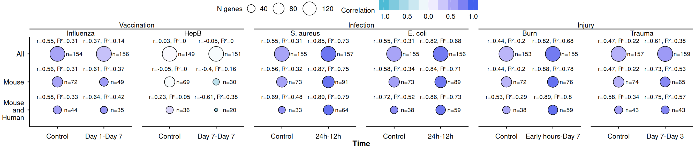
# Save
correlation_long_all_btm_mouse_human_timepoints_summary_heatmap_mean %>%
ggsave(filename = here("Figures", "all_human_mouse_mean_btm_correlation_all_timepoints_summary_heatmap_filtered.png"),
width = 14,
height = 4)Ignoring unknown labels:
• colour : "Correlation"Scatter plot
# Data preparation
dge_btm_mean_group_correlation_df_plot <-
bind_rows(
# All modules (no filtering)
dge_btm_mean_group_correlation_df %>%
mutate(filter = "All"),
# Modules significant in mouse only (padj <= 0.25 in mouse, > 0.25 in human)
dge_btm_mean_group_correlation_df %>%
filter(p_adjust_mean_Mouse <= 0.25, p_adjust_mean_Human > 0.25) %>%
mutate(filter = "Mouse"),
# Modules significant in both organisms
dge_btm_mean_group_correlation_df %>%
filter(p_adjust_mean_Mouse <= 0.25 & p_adjust_mean_Human <= 0.25) %>%
mutate(filter = "Mouse and Human"),
)
# Scatterplot
dge_btm_mean_group_correlation_plot <- dge_btm_mean_group_correlation_df_plot %>%
ggplot() +
aes(x = mean_log2fc_Mouse,
y = mean_log2fc_Human) +
facet_nested_wrap(vars(pathogen, facet_name),
scales = "free",
nrow = 1,
strip = strip_nested(size = "variable")) +
# Guide lines
geom_abline(alpha = 0.2, linetype = 2) +
geom_abline(alpha = 0.2, linetype = 2, slope = -1) +
geom_hline(yintercept = 0, alpha = 0.2, linetype = 2) +
geom_vline(xintercept = 0, alpha = 0.2, linetype = 2) +
# Geom layer: all modules shown with blur for background density
with_blur(
geom_point(aes(fill = group, color = group, shape = filter),
data = . %>% filter(filter == "All"),
size = 2, alpha = 0.2, stroke = 0.1, sigma = 2)
) +
# Geom layer: mouse-only significant modules drawn with full opacity
geom_point(aes(fill = group, shape = filter, color = group),
data = . %>% filter(filter == "Mouse"),
size = 2, stroke = 0.1, alpha = 1) +
# Geom layer: both-significant modules drawn with black outline for emphasis
geom_point(aes(fill = group, shape = filter),
color = "black",
data = . %>% filter(filter == "Mouse and Human"),
size = 2, stroke = 0.1, alpha = 1) +
# Scales
scale_shape_manual(values = c(21, 22, 24)) +
scale_fill_manual(values = colors$immune_colors) +
scale_color_manual(values = colors$immune_colors) +
guides(color = FALSE,
fill = guide_legend(byrow = TRUE, nrow = 3,
keywidth = unit(0.3, "cm"),
keyheight = unit(0.3, "cm"),
override.aes = list(size = 3, shape = 21, color = "black"),
default.unit = "cm"),
shape = guide_legend(byrow = TRUE, nrow = 3,
keywidth = unit(0.3, "cm"),
keyheight = unit(0.3, "cm"),
override.aes = list(size = 3),
default.unit = "cm")) +
# Labels
labs(fill = "Group",
shape = "Significance",
y = "Human (Mean Log2FC)",
x = "Mouse (Mean Log2FC)") +
# Theme customization
theme_vaxgo() +
theme(
strip.text.x = element_text(hjust = 0),
legend.position = "top",
legend.direction = "horizontal",
legend.text = element_text(hjust = 0),
panel.spacing = unit(0, "lines"))
# Render plot
dge_btm_mean_group_correlation_plot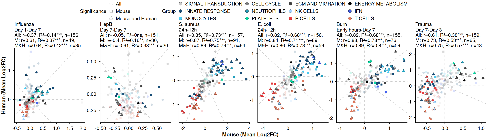
# Save
dge_btm_mean_group_correlation_plot %>%
ggsave(filename = here("Figures", "all_human_mouse_dge_btm_mean_group_correlation_plot_filtered.png"),
width = 14, height = 4)Conditions vs. Control
# Data preparation
dge_btm_mean_group_correlation_df_control_plot <-
bind_rows(
# All modules (no filtering)
dge_btm_mean_group_correlation_df %>%
mutate(filter = "All"),
# Modules significant in mouse only (padj <= 0.25 in mouse, > 0.25 in human)
dge_btm_mean_group_correlation_df %>%
filter(p_adjust_mean_Control <= 0.25, p_adjust_mean_Human > 0.25) %>%
mutate(filter = "Control"),
# Modules significant in both organisms
dge_btm_mean_group_correlation_df %>%
filter(p_adjust_mean_Control <= 0.25 & p_adjust_mean_Human <= 0.25) %>%
mutate(filter = "Control and Human"),
)
# Scatterplot
dge_btm_mean_group_correlation_plot_control <- dge_btm_mean_group_correlation_df_control_plot %>%
ggplot() +
aes(x = mean_log2fc_Mouse,
y = mean_log2fc_Control) +
facet_nested_wrap(vars(pathogen, facet_name_control),
scales = "free",
nrow = 1,
strip = strip_nested(size = "variable")) +
# Guide lines
geom_abline(alpha = 0.2, linetype = 2) +
geom_abline(alpha = 0.2, linetype = 2, slope = -1) +
geom_hline(yintercept = 0, alpha = 0.2, linetype = 2) +
geom_vline(xintercept = 0, alpha = 0.2, linetype = 2) +
# Geom layer: all modules shown with blur for background density
with_blur(
geom_point(aes(fill = group, color = group, shape = filter),
data = . %>% filter(filter == "All"),
size = 2, alpha = 0.2, stroke = 0.1, sigma = 2)
) +
# Geom layer: mouse-only significant modules drawn with full opacity
geom_point(aes(fill = group, shape = filter, color = group),
data = . %>% filter(filter == "Control"),
size = 2, stroke = 0.1, alpha = 1) +
# Geom layer: both-significant modules drawn with black outline for emphasis
geom_point(aes(fill = group, shape = filter),
color = "black",
data = . %>% filter(filter == "Control and Human"),
size = 2, stroke = 0.1, alpha = 1) +
# Scales
scale_shape_manual(values = c(21, 22, 24)) +
scale_fill_manual(values = colors$immune_colors) +
scale_color_manual(values = colors$immune_colors) +
guides(color = FALSE,
fill = guide_legend(byrow = TRUE, nrow = 3,
keywidth = unit(0.3, "cm"),
keyheight = unit(0.3, "cm"),
override.aes = list(size = 3, shape = 21, color = "black"),
default.unit = "cm"),
shape = guide_legend(byrow = TRUE, nrow = 3,
keywidth = unit(0.3, "cm"),
keyheight = unit(0.3, "cm"),
override.aes = list(size = 3),
default.unit = "cm")) +
# Labels
labs(fill = "Group",
shape = "Significance",
y = "Human (Mean Log2FC)",
x = "Control (Mean Log2FC)") +
# Theme customization
theme_vaxgo() +
theme(
strip.text.x = element_text(hjust = 0),
legend.position = "top",
legend.direction = "horizontal",
legend.text = element_text(hjust = 0),
panel.spacing = unit(0, "lines"))
# Render plot
dge_btm_mean_group_correlation_plot_control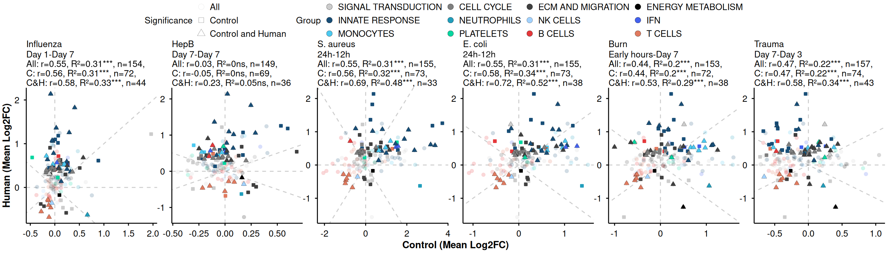
# Save
dge_btm_mean_group_correlation_plot_control %>%
ggsave(filename = here("Figures", "all_human_mouse_dge_btm_mean_group_correlation_plot_filtered_Control.png"),
width = 14, height = 4)Compute Pearson correlations between Human and Mouse NES values across BTMs, stratified by pathogen and timepoint, for all genes and for significance-filtered subsets.
Condition vs. Condition
# Correlation for all modules
cor_labels_nes <- dge_btm_gsea_mean_wide %>%
group_by(pathogen, timepoint_comparison) %>%
calculate_correlation_pearson(
x_col = nes_Mouse,
y_col = nes_Human,
group_cols = c("pathogen", "timepoint_comparison")
)
# Correlation for Mouse-significant modules
cor_labels_nes_Mouse <- dge_btm_gsea_mean_wide %>%
filter(p_adjust_Mouse <= 0.25) %>%
calculate_correlation_pearson(
x_col = nes_Mouse,
y_col = nes_Human,
group_cols = c("pathogen", "timepoint_comparison")
)
# Correlation for both Mouse and Human significant modules
cor_labels_nes_Mouse_Human <- dge_btm_gsea_mean_wide %>%
filter(p_adjust_Mouse <= 0.25, p_adjust_Human <= 0.25) %>%
calculate_correlation_pearson(
x_col = nes_Mouse,
y_col = nes_Human,
group_cols = c("pathogen", "timepoint_comparison")
)
######## Control
# Correlation for all modules
cor_labels_nes_control <- dge_btm_gsea_mean_wide %>%
calculate_correlation_pearson(
x_col = nes_Control,
y_col = nes_Human,
group_cols = c("pathogen", "timepoint_comparison")
)
# Correlation for Mouse-significant modules
cor_labels_nes_control_Control <- dge_btm_gsea_mean_wide %>%
filter(p_adjust_Control <= 0.25) %>%
calculate_correlation_pearson(
x_col = nes_Control,
y_col = nes_Human,
group_cols = c("pathogen", "timepoint_comparison")
)
# Correlation for both Mouse and Human significant modules
cor_labels_nes_control_Control_Human <- dge_btm_gsea_mean_wide %>%
filter(p_adjust_Control <= 0.25, p_adjust_Human <= 0.25) %>%
calculate_correlation_pearson(
x_col = nes_Control,
y_col = nes_Human,
group_cols = c("pathogen", "timepoint_comparison")
)
#Bind to one df
cor_labels_nes_long = bind_rows(
#Mouse
cor_labels_nes %>% mutate(filter = "All"),
cor_labels_nes_Mouse %>% mutate(filter = "Mouse"),
cor_labels_nes_Mouse_Human %>% mutate(filter = "Mouse and Human")
) %>%
#Refactor
mutate(pathogen = fct_relevel(pathogen, "Influenza", "HepB", "S. aureus", "E. coli", "Burn", "Trauma"),
treatment = case_when(pathogen %in% c("HepB", "Influenza") ~ "Vaccination",
pathogen %in% c("S. aureus", "E. coli") ~ "Infection",
pathogen %in% c("Burn", "Trauma") ~ "Injury",
TRUE ~ pathogen),
treatment = fct_relevel(treatment, "Vaccination", "Infection", "Injury"))
#Bind to one df
cor_labels_nes_long_control = bind_rows(cor_labels_nes_control %>% mutate(filter = "All"),
cor_labels_nes_control_Control %>% mutate(filter = "Mouse"),
cor_labels_nes_control_Control_Human %>% mutate(filter = "Mouse and Human")) %>%
mutate(timepoint_comparison = "Control") %>%
#Refactor
mutate(pathogen = fct_relevel(pathogen, "Influenza", "HepB", "S. aureus", "E. coli", "Burn", "Trauma"),
treatment = case_when(pathogen %in% c("HepB", "Influenza") ~ "Vaccination",
pathogen %in% c("S. aureus", "E. coli") ~ "Infection",
pathogen %in% c("Burn", "Trauma") ~ "Injury",
TRUE ~ pathogen),
treatment = fct_relevel(treatment, "Vaccination", "Infection", "Injury"))
# Build master correlation data frame with scores and annotations
dge_btm_nes_group_correlation_df = dge_btm_gsea_mean_wide %>%
ungroup() %>%
# Reorder module groups and wrap long process names for display
mutate(group = fct_relevel(group, c(immune_order)),
process = str_wrap(process, width = 15)) %>%
drop_na(mean_log2fc_Mouse) %>%
# Attach the three sets of correlation labels by (pathogen, timepoint_comparison
inner_join(cor_labels_nes, by = join_by(pathogen, timepoint_comparison)) %>%
inner_join(cor_labels_nes_Mouse %>%
dplyr::rename_with(
.fn = ~ stringr::str_c(.x, "_filter_Mouse"),
.cols = cor_value:cor_label
), by = join_by(pathogen, timepoint_comparison)) %>%
inner_join(cor_labels_nes_Mouse_Human %>%
dplyr::rename_with(
.fn = ~ stringr::str_c(.x, "_filter_Mouse_Human"),
.cols = cor_value:cor_label
), by = join_by(pathogen, timepoint_comparison)) %>%
#Add controls
inner_join(cor_labels_nes_control %>%
dplyr::rename_with(
.fn = ~ stringr::str_c(.x, "_Control"),
.cols = cor_value:cor_label
), by = join_by(pathogen, timepoint_comparison)) %>%
inner_join(cor_labels_nes_control_Control %>%
dplyr::rename_with(
.fn = ~ stringr::str_c(.x, "_filter_Control"),
.cols = cor_value:cor_label
), by = join_by(pathogen, timepoint_comparison)) %>%
inner_join(cor_labels_nes_control_Control_Human %>%
dplyr::rename_with(
.fn = ~ stringr::str_c(.x, "_filter_Control_Human"),
.cols = cor_value:cor_label
), by = join_by(pathogen, timepoint_comparison)) %>%
# Combine the three correlation labels into a single facet annotation
mutate(cor_labels_all_filtered = paste0("All: ", cor_label, ",\nM: ", cor_label_filter_Mouse, ",\nM&H: ", cor_label_filter_Mouse_Human),
facet_name = paste0(timepoint_comparison, "\n", cor_labels_all_filtered),
#Add control
cor_labels_all_filtered_control = paste0("All: ", cor_label_Control, ",\nC: ", cor_label_filter_Control, ",\nC&H: ", cor_label_filter_Control_Human),
facet_name_control = paste0(timepoint_comparison, "\n", cor_labels_all_filtered_control),
#Rearrange factors
pathogen = fct_relevel(pathogen, "Influenza", "HepB", "S. aureus", "E. coli", "Burn", "Trauma"),
treatment = case_when(pathogen %in% c("HepB", "Influenza") ~ "Vaccination",
pathogen %in% c("S. aureus", "E. coli") ~ "Infection",
pathogen %in% c("Burn", "Trauma") ~ "Injury",
TRUE ~ pathogen),
treatment = fct_relevel(treatment, "Vaccination", "Infection", "Injury"))Warning: There were 2 warnings in `mutate()`.
The first warning was:
ℹ In argument: `pathogen = fct_relevel(...)`.
Caused by warning:
! 2 unknown levels in `f`: Influenza and HepB
ℹ Run `dplyr::last_dplyr_warnings()` to see the 1 remaining warning.dge_btm_nes_group_correlation_df %>% dplyr::count(pathogen, timepoint_comparison) pathogen timepoint_comparison n
1 S. aureus 24h-12h 157
2 E. coli 24h-12h 156
3 Burn Early hours-Day 7 159
4 Trauma Day 7-Day 3 159#Merge to one DF
cor_labels_nes_long_condition_control = bind_rows(cor_labels_nes_long,
cor_labels_nes_long_control) %>%
filter(treatment %in% c("Infection", "Injury"))
# Data preparation
correlation_long_all_btm_mouse_human_timepoints_summary_heatmap = cor_labels_nes_long_condition_control %>%
mutate(filter = str_replace(filter, "Mouse and Human", "Mouse\nand\nHuman"),
timepoint_comparison = fct_relevel(timepoint_comparison, "Control")) %>%
# Aesthetics
ggplot() +
aes(x = timepoint_comparison,
y = filter %>% fct_rev(),
fill = cor_value) +
# Facets
facet_nested_wrap(~treatment+pathogen,
scales = "free_x",
nrow = 1) +
# Geoms
geom_point(aes(size = n_obs),
pch = 21) +
geom_text(aes(label = paste0("r=",round(cor_value,2), ", R²=", round(r_squared,2), p_adj_label)),
color = "black",
vjust = -2.5, fontface = "plain",
size = 3) +
geom_text(aes(label = paste0("n=", n_obs)),
color = "black",
vjust = 0.5, fontface = "plain",
hjust = -0.5,
size = 3)+
# Scales
scale_size_continuous(range = c(2, 10)) +
scale_fill_gradientn(
colors = c("#4DBBD5FF", "white", "#4361ee"),
values = scales::rescale(c(-1, 0, 1)),
limits = c(-1, 1),
name = "Correlation",
guide = ggplot2::guide_colorbar(
barwidth = 10,
barheight = 1,
nbin = 10,
raster = FALSE
)
) +
# Labels
labs(
x = "Time",
y = "Filter",
color = "Correlation",
size = "N genes") +
# Theme
theme_vaxgo() +
theme(axis.text.x = element_text(angle = 0, hjust = 0.5, vjust = 0, size = 10),
axis.text.y = element_text(size = 10),
axis.title.y = element_blank(),
strip.text.x = element_text(angle = 0, hjust = 0.5, vjust = 0.5, size = 10),
strip.text.y = element_text(angle = 0, hjust = 0, vjust = 0.5, size = 10),
panel.spacing = unit(1, "lines"),
plot.margin = margin(0, 0.1, 0, 0.1, unit = "cm"),
legend.position = "top",
legend.direction = "horizontal",
legend.margin = margin(0, 0, 0, 0),
legend.box.margin = margin(0, 0, -10, 0),
legend.text = element_text(size = 10, hjust = 0.5),
legend.title = element_text(size = 10),
ggh4x.facet.nestline = element_line(colour = "black", linetype = 1))
# Render plot
correlation_long_all_btm_mouse_human_timepoints_summary_heatmap Ignoring unknown labels:
• colour : "Correlation"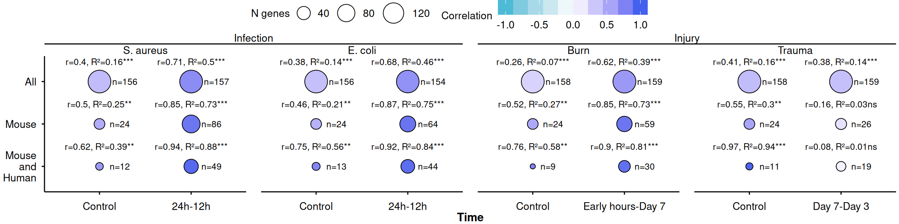
# Save
correlation_long_all_btm_mouse_human_timepoints_summary_heatmap %>%
ggsave(filename = here("Figures", "all_human_mouse_NES_btm_correlation_all_timepoints_summary_heatmap_filtered.png"),
width = 10,
height = 3)Ignoring unknown labels:
• colour : "Correlation"# Data preparation
correlation_long_all_btm_mouse_human_timepoints_summary_barplot = dge_btm_nes_group_correlation_df %>%
# Reshape
pivot_longer(cols = c(cor_value, cor_value_filter_Mouse, cor_value_filter_Mouse_Human),
names_to = "correlation_filter",
values_to = "correlation") %>%
# Rename
mutate(correlation_filter = case_when(correlation_filter == "cor_value" ~ "All",
correlation_filter == "cor_value_filter_Mouse" ~ "Mouse",
correlation_filter == "cor_value_filter_Mouse_Human" ~ "Mouse and Human",
TRUE ~ correlation_filter)) %>%
# Aesthetics
ggplot() +
aes(x = timepoint_comparison,
y = correlation,
group = correlation_filter,
fill = correlation_filter) +
# Geoms
geom_line(size = 1) +
# Geoms
geom_col(position = position_dodge(width = 0.8), width = 0.7) +
# Facets
facet_nested_wrap(~treatment+pathogen,
scales = "free_x",
nrow = 1) +
# Scales
# scale_x_discrete(expand = c(0.05, 0.05)) +
scale_y_continuous(expand = c(0, 0),
limits = c(0, 1), breaks = seq(0, 1, by = 0.2)) +
scale_fill_manual(values = c("All" = "gray90",
"Mouse" = "gray50",
"Mouse and Human" = "#4DBBD5FF")) +
# Labels
labs(
x = "Time",
y = "Correlation",
color = "Comparison") +
# Theme
theme_vaxgo() +
theme(axis.text.x = element_text(angle = 0, hjust = 0.5, vjust = 0, size = 10),
axis.text.y = element_text(size = 10),
strip.text.x = element_text(angle = 0, hjust = 0.5, vjust = 0.5, size = 10),
strip.text.y = element_text(angle = 0, hjust = 0, vjust = 0.5, size = 10),
panel.spacing = unit(1, "lines"),
plot.margin = margin(0, 0.5, 0, 0.5, unit = "cm"),
legend.position = "top",
legend.direction = "horizontal",
legend.margin = margin(0, 0, 0, 0),
legend.box.margin = margin(0, 0, -10, 0),
legend.text = element_text(size = 10, hjust = 0),
legend.title = element_text(size = 10),
ggh4x.facet.nestline = element_line(colour = "black", linetype = 1)) Warning: Using `size` aesthetic for lines was deprecated in ggplot2 3.4.0.
ℹ Please use `linewidth` instead.# Render plot
correlation_long_all_btm_mouse_human_timepoints_summary_barplotIgnoring unknown labels:
• colour : "Comparison"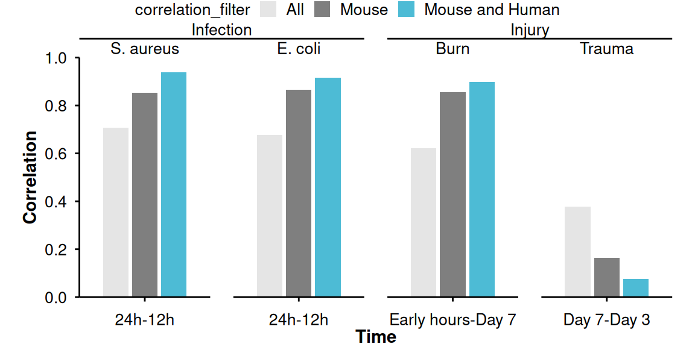
#Save
correlation_long_all_btm_mouse_human_timepoints_summary_barplot %>%
ggsave(filename = here("Figures", "all_human_mouse_NES_btm_correlation_all_timepoints_summary_barplot_filtered.png"),
width = 6,
height = 3)Ignoring unknown labels:
• colour : "Comparison"Line plot of summary results
# Data preparation
correlation_long_all_btm_mouse_human_timepoints_summary_lineplot = dge_btm_nes_group_correlation_df %>%
# Reshape
pivot_longer(cols = c(cor_value, cor_value_filter_Mouse, cor_value_filter_Mouse_Human),
names_to = "correlation_filter",
values_to = "correlation") %>%
# Rename
mutate(correlation_filter = case_when(correlation_filter == "cor_value" ~ "All",
correlation_filter == "cor_value_filter_Mouse" ~ "Mouse",
correlation_filter == "cor_value_filter_Mouse_Human" ~ "Mouse and Human",
TRUE ~ correlation_filter)) %>%
# Aesthetics
ggplot() +
aes(x = timepoint_comparison,
y = correlation,
group = correlation_filter,
color = correlation_filter,
fill = correlation_filter) +
# Geoms
geom_line(size = 1) +
geom_point(pch = 21, fill = "white", size = 1.5, stroke = 1) +
geom_hline(yintercept = 0, linetype = 2, color = "black") +
# Facets
facet_nested_wrap(~treatment+pathogen,
scales = "free_x",
nrow = 1) +
# Scales
scale_x_discrete(expand = c(0.05, 0.05)) +
scale_y_continuous(expand = c(0.05, 0.05)) +
scale_color_manual(values = c("All" = "gray90",
"Mouse" = "gray50",
"Mouse and Human" = "#4DBBD5FF")) +
scale_fill_manual(values = c("All" = "gray90",
"Mouse" = "gray50",
"Mouse and Human" = "#4DBBD5FF")) +
# Labels
labs(
x = "Time",
y = "Correlation",
color = "Comparison") +
# Theme
theme_vaxgo() +
theme(axis.text.x = element_text(angle = 0, hjust = 0.5, vjust = 0, size = 10),
axis.text.y = element_text(size = 10),
strip.text.x = element_text(angle = 0, hjust = 0.5, vjust = 0.5, size = 10),
strip.text.y = element_text(angle = 0, hjust = 0, vjust = 0.5, size = 10),
panel.spacing = unit(2, "lines"),
plot.margin = margin(0, 0.5, 0, 0.5, unit = "cm"),
legend.position = "top",
legend.direction = "horizontal",
legend.margin = margin(0, 0, 0, 0),
legend.box.margin = margin(0, 0, -10, 0),
legend.text = element_text(size = 10, hjust = 0),
legend.title = element_text(size = 10),
ggh4x.facet.nestline = element_line(colour = "black", linetype = 1)) +
guides(fill = "none")
# Render plot
correlation_long_all_btm_mouse_human_timepoints_summary_lineplot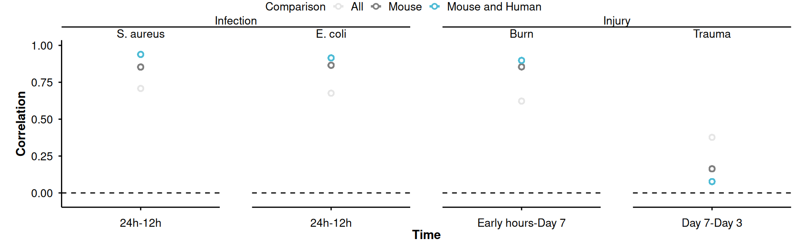
# correlation_long_all_btm_mouse_human_timepoints_summary_lineplot %>%
# ggsave(filename = here("Figures", paste0(filename, "_NES_btm_correlation_all_timepoints_summary_lineplot.png")),
# width = 10,
# height = 3)# Data preparation: stack filter levels
dge_btm_nes_group_correlation_plot =
bind_rows(
# All modules
dge_btm_nes_group_correlation_df %>%
mutate(filter = "All"),
# Only Mouse-significant modules
dge_btm_nes_group_correlation_df %>%
filter(p_adjust_Mouse <= 0.25, p_adjust_Human > 0.25) %>%
mutate(filter = "Mouse"),
# Both-significant modules
dge_btm_nes_group_correlation_df %>%
filter(p_adjust_Mouse <= 0.25 & p_adjust_Human <= 0.25) %>%
mutate(filter = "Mouse and Human"),
) %>%
# Aesthetics
ggplot() +
aes(x = nes_Mouse,
y = nes_Human,
labels = process) +
# Facets
facet_nested_wrap(vars(pathogen, facet_name),
scales = "free",
nrow = 1,
strip = strip_nested(size = "variable")) +
# Guide lines: diagonal, anti-diagonal, axes
geom_abline(alpha = 0.2, linetype = 2) +
geom_abline(alpha = 0.2, linetype = 2, slope = -1) +
geom_hline(yintercept = 0, alpha = 0.2, linetype = 2) +
geom_vline(xintercept = 0, alpha = 0.2, linetype = 2) +
# All points with blur for density visualisation
with_blur(
geom_point(aes(fill = group,
color = group,
shape = filter),
data = . %>% filter(filter == c("All")),
size = 1.5,
alpha = 0.2,
sigma = 2)
) +
# Mouse-only significant points
geom_point(aes(fill = group,
shape = filter,
color = group),
data = . %>% filter(filter == c("Mouse")),
size = 2,
stroke = 0.1,
alpha = 1
) +
# Both-significant points
geom_point(aes(fill = group,
shape = filter),
color = "black",
data = . %>% filter(filter == c("Mouse and Human")),
size = 2,
stroke = 0.1,
alpha = 1
) +
# Scales
scale_shape_manual(values = c(21, 22, 24)) +
scale_fill_manual(values = colors$immune_colors) +
scale_color_manual(values = colors$immune_colors) +
# Guides
guides(color = FALSE,
fill = guide_legend(byrow = TRUE, nrow = 3,
keywidth = unit(0.3, "cm"),
keyheight = unit(0.3, "cm"),
override.aes = list(size = 3, shape = 21, color = "black"),
default.unit = "cm"),
shape = guide_legend(byrow = TRUE,
nrow = 3,
keywidth = unit(0.3, "cm"),
keyheight = unit(0.3, "cm"),
override.aes = list(size = 3),
default.unit = "cm")) +
# Labels
labs(fill = "Group",
shape = "Significance",
y = "Human (NES)",
x = "Mouse (NES)") +
# Theme
theme_vaxgo() +
theme(
strip.text.x = element_text(hjust = 0),
legend.position = "top",
legend.direction = "horizontal",
legend.text = element_text(hjust = 0),
panel.spacing = unit(0, "lines"))Warning in geom_point(aes(fill = group, color = group, shape = filter), :
Ignoring unknown parameters: `sigma`# Render plot
dge_btm_nes_group_correlation_plotWarning: Removed 2 rows containing missing values or values outside the scale range
(`blurred_geom()`).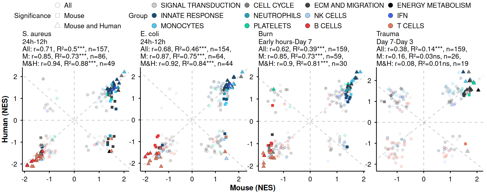
# Save plot
dge_btm_nes_group_correlation_plot %>%
ggsave(filename = here("Figures", "all_human_mouse_dge_btm_nes_group_correlation_plot_filtered.png"),
width = 10,
height = 4)Warning: Removed 2 rows containing missing values or values outside the scale range
(`blurred_geom()`).# Data preparation: stack filter levels
dge_btm_nes_group_correlation_control_plot =
bind_rows(
# All modules
dge_btm_nes_group_correlation_df %>%
mutate(filter = "All"),
# Only Mouse-significant modules
dge_btm_nes_group_correlation_df %>%
filter(p_adjust_Control <= 0.25, p_adjust_Human > 0.25) %>%
mutate(filter = "Control"),
# Both-significant modules
dge_btm_nes_group_correlation_df %>%
filter(p_adjust_Control <= 0.25 & p_adjust_Human <= 0.25) %>%
mutate(filter = "Control and Human"),
) %>%
filter(treatment != "Vaccination") %>%
# Aesthetics
ggplot() +
aes(x = nes_Control,
y = nes_Human,
labels = process) +
# Facets
facet_nested_wrap(vars(pathogen, facet_name_control),
scales = "free",
nrow = 1,
strip = strip_nested(size = "variable")) +
# Guide lines: diagonal, anti-diagonal, axes
geom_abline(alpha = 0.2, linetype = 2) +
geom_abline(alpha = 0.2, linetype = 2, slope = -1) +
geom_hline(yintercept = 0, alpha = 0.2, linetype = 2) +
geom_vline(xintercept = 0, alpha = 0.2, linetype = 2) +
# All points with blur for density visualisation
with_blur(
geom_point(aes(fill = group,
color = group,
shape = filter),
data = . %>% filter(filter == c("All")),
size = 1.5,
alpha = 0.2,
sigma = 2)
) +
# Mouse-only significant points
geom_point(aes(fill = group,
shape = filter,
color = group),
data = . %>% filter(filter == c("Control")),
size = 2,
stroke = 0.1,
alpha = 1
) +
# Both-significant points
geom_point(aes(fill = group,
shape = filter),
color = "black",
data = . %>% filter(filter == c("Control and Human")),
size = 2,
stroke = 0.1,
alpha = 1
) +
# Scales
scale_shape_manual(values = c(21, 22, 24)) +
scale_fill_manual(values = colors$immune_colors) +
scale_color_manual(values = colors$immune_colors) +
# Guides
guides(color = FALSE,
fill = guide_legend(byrow = TRUE, nrow = 3,
keywidth = unit(0.3, "cm"),
keyheight = unit(0.3, "cm"),
override.aes = list(size = 3, shape = 21, color = "black"),
default.unit = "cm"),
shape = guide_legend(byrow = TRUE,
nrow = 3,
keywidth = unit(0.3, "cm"),
keyheight = unit(0.3, "cm"),
override.aes = list(size = 3),
default.unit = "cm")) +
# Labels
labs(fill = "Group",
shape = "Significance",
y = "Human (NES)",
x = "Control (NES)") +
# Theme
theme_vaxgo() +
theme(
strip.text.x = element_text(hjust = 0),
legend.position = "top",
legend.direction = "horizontal",
legend.text = element_text(hjust = 0),
panel.spacing = unit(0, "lines"))Warning in geom_point(aes(fill = group, color = group, shape = filter), :
Ignoring unknown parameters: `sigma`# Render plot
dge_btm_nes_group_correlation_control_plotWarning: Removed 3 rows containing missing values or values outside the scale range
(`blurred_geom()`).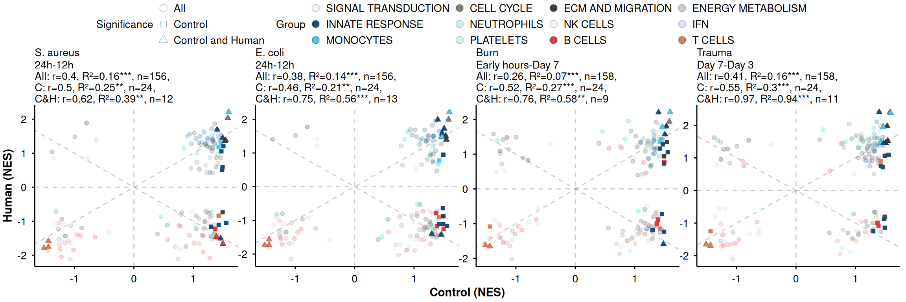
#Save plot
dge_btm_nes_group_correlation_control_plot %>%
ggsave(filename = here("Figures", "all_human_mouse_dge_btm_nes_group_correlation_plot_Control_filtered.png"),
width = 10,
height = 4)Warning: Removed 3 rows containing missing values or values outside the scale range
(`blurred_geom()`).# Precision analysis by Mouse NES quartiles
# Compute precision per quartile
results_quartiles = dge_btm_nes_group_correlation_df %>%
# Retain only all-module filter; exclude pathogens with few timepoints
# filter(!pathogen %in% c("Influenza", "Hepatitis B")) %>%
# Stratify by pathogen and timepoint
group_by(pathogen, timepoint_comparison) %>%
# Restrict to positively enriched modules only
filter(nes_Mouse > 0,
nes_Human > 0) %>%
# Divide modules into quartiles by Mouse NES
mutate(quartile = ntile(nes_Mouse, 4)) %>%
# Compute precision per quartile
group_by(pathogen, timepoint_comparison, quartile) %>%
summarise(
total_in_quartile = n(),
true_positives = sum(p_adjust_Human <= 0.05),
precision_pct = (true_positives / total_in_quartile) * 100,
.groups = "drop"
)
# Visualisation: precision ladder plot
ggplot(results_quartiles) +
aes(x = precision_pct, y = as.character(quartile), fill = as.character(quartile)) +
# Geoms
geom_col(position = position_dodge(width = 0.8), width = 0.7) +
# Reference line for random chance (5% = 0.05 alpha)
geom_vline(xintercept = 5, linetype = "dashed", color = "red") +
# Facets
facet_wrap(~pathogen, scales = "free_y", nrow = 1) +
# Scales
scale_fill_viridis_d(name = "Mouse Quartile", option = "mako", direction = -1) +
scale_x_continuous(limits = c(0, 100), labels = function(x) paste0(x, "%")) +
# Theme
theme_vaxgo() +
theme(legend.position = "top") +
# Labels
labs(title = "Precision by Mouse NES Quartile",
subtitle = "Higher Quartiles (4) should show higher % of Human validation",
x = "Precision (% of BTMs Significant in Human)",
y = "Timepoint")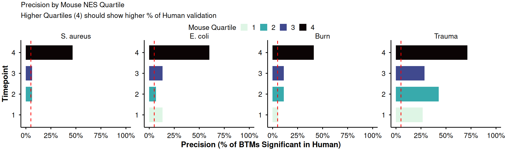
##—————-
# Define a safe correlation function robust to low n and zero variance
safe_cor_test <- function(x, y, method) {
# Remove non-finite values
ok <- is.finite(x) & is.finite(y)
x <- x[ok]
y <- y[ok]
# Require at least 3 observations and non-zero variance
if (length(x) < 3 || sd(x) == 0 || sd(y) == 0) {
return(list(estimate = NA_real_, p.value = NA_real_))
} else {
tryCatch({
ct <- cor.test(x, y, method = method)
return(list(estimate = unname(ct$estimate), p.value = ct$p.value))
}, error = function(e) {
return(list(estimate = NA_real_, p.value = NA_real_))
})
}
}
# Compute per-BTM Spearman correlation
dge_btm_process_genes_correlation <- dge_btm_process_genes_wide %>%
group_by(pathogen, timepoint_comparison, process) %>%
# Compute correlation and count genes
summarise(
n_genes = n(),
test_result = list(safe_cor_test(x = mean_l2fc_Mouse, y = mean_l2fc_Human, method = "spearman")),
.groups = "drop"
) %>%
# Extract correlation estimate and p-value
mutate(
cor_value = map_dbl(test_result, ~ .x$estimate %||% NA_real_),
p_value = map_dbl(test_result, ~ .x$p.value %||% NA_real_)
) %>%
# Compute R-squared and significance label
mutate(
r_squared = cor_value^2,
p_label = case_when(
p_value <= 0.01 ~ "***",
p_value <= 0.05 ~ "**",
p_value <= 0.10 ~ "*",
TRUE ~ "ns"
),
cor_label = sprintf("r=%.2f, R²=%.2f, %s", cor_value, r_squared, p_label)
) %>%
# Remove nested column and organise
select(-test_result) %>%
arrange(timepoint_comparison) %>%
distinct()
# Clean and rank processes by absolute correlation strength
correlation_processes_bypathogen_time_df <- dge_btm_process_genes_correlation %>%
# Remove missing correlations
drop_na(cor_value) %>%
# Group by pathogen and timepoint
group_by(pathogen, timepoint_comparison) %>%
# Rank within each stratum by descending absolute correlation
arrange(process, -abs(cor_value)) %>%
distinct() %>%
# Remove grouping
ungroup() %>%
# Attach functional group annotation
inner_join(
btm_annotation_genes %>% select(process, group),
by = "process"
) %>%
# Deduplicate after join
distinct()Warning in inner_join(., btm_annotation_genes %>% select(process, group), : Detected an unexpected many-to-many relationship between `x` and `y`.
ℹ Row 1 of `x` matches multiple rows in `y`.
ℹ Row 1 of `y` matches multiple rows in `x`.
ℹ If a many-to-many relationship is expected, set `relationship =
"many-to-many"` to silence this warning.# Check
correlation_processes_bypathogen_time_df %>%
dplyr::count(pathogen, timepoint_comparison)# A tibble: 6 × 3
pathogen timepoint_comparison n
<chr> <chr> <int>
1 Burn Early hours-Day 7 150
2 E. coli 24h-12h 135
3 HepB Day 7-Day 7 126
4 Influenza Day 1-Day 7 132
5 S. aureus 24h-12h 139
6 Trauma Day 7-Day 3 152#Save
correlation_processes_bypathogen_time_df %>%
saveRDS(file = here("tables", "Functional analysis", "all_human_mouse_dge_btm_process_genes_correlation.rds"))
# # Compute per-gene Spearman correlation across conditions
# dge_btm_process_genes_correlation_bygene <- dge_btm_process_genes_wide %>%
# # Select relevant columns; exclude Influenza and Hepatitis B
# select(symbol, pathogen, timepoint_comparison, Mouse = mean_l2fc_Mouse, Human = mean_l2fc_Human) %>%
# filter(!pathogen %in% c("Influenza", "Hepatitis B")) %>%
# distinct() %>%
# # Group by gene symbol
# group_by(symbol) %>%
# summarise(
# n_pathogens = n(),
# test_result = list(safe_cor_test(x = Human, y = Mouse, method = "spearman")),
# .groups = "drop"
# ) %>%
# # Extract correlation estimate and p-value
# mutate(
# cor_value = map_dbl(test_result, ~ .x$estimate %||% NA_real_),
# p_value = map_dbl(test_result, ~ .x$p.value %||% NA_real_)
# ) %>%
# # Compute R-squared and significance label
# mutate(
# r_squared = cor_value^2,
# p_label = case_when(
# p_value <= 0.01 ~ "***",
# p_value <= 0.05 ~ "**",
# p_value <= 0.10 ~ "*",
# TRUE ~ "ns"
# ),
# cor_label = sprintf("r=%.2f, R²=%.2f, %s", cor_value, r_squared, p_label)
# ) %>%
# # Remove nested column and sort by correlation strength
# select(-test_result) %>%
# arrange(cor_value) %>%
# distinct()
#
# # Inspect and save per-gene correlation
# dge_btm_process_genes_correlation_bygene
#
# dge_btm_process_genes_correlation_bygene %>%
# saveRDS(file = here("tables", "Functional analysis", "all_human_mouse_dge_btm_process_genes_correlation_bygene.rds"))Distribution of correlations across timepoints and pathogens with a violin-boxplot
# Select extreme processes for labelling
selected_processes_df = bind_rows(
# Top positive correlations
correlation_processes_bypathogen_time_df %>%
filter(p_value <= 0.05,
cor_value > 0) %>%
group_by(pathogen, timepoint_comparison) %>%
filter(n_genes > 3) %>%
arrange(-cor_value, -n_genes) %>%
slice_head(n = 2),
# Top negative correlations
correlation_processes_bypathogen_time_df %>%
filter(p_value <= 0.05,
cor_value < 0) %>%
group_by(pathogen, timepoint_comparison) %>%
filter(n_genes > 3) %>%
arrange(cor_value, -n_genes) %>%
slice_head(n = 2),
# Bottom positive correlations
correlation_processes_bypathogen_time_df %>%
filter(p_value <= 0.05,
cor_value > 0) %>%
group_by(pathogen, timepoint_comparison) %>%
filter(n_genes > 3) %>%
arrange(cor_value, -n_genes) %>%
slice_head(n = 2),
# Bottom negative correlations
correlation_processes_bypathogen_time_df %>%
filter(p_value <= 0.05,
cor_value < 0) %>%
group_by(pathogen, timepoint_comparison) %>%
filter(n_genes > 3) %>%
arrange(cor_value, -n_genes) %>%
slice_head(n = 2)
)
# Violin-boxplot of correlation distributions
correlation_processes_bypathogen_time = correlation_processes_bypathogen_time_df %>%
# Aesthetics
ggplot() +
aes(x = timepoint_comparison,
y = cor_value,
fill = pathogen,
color = pathogen) +
# Facets
facet_nested_wrap(~pathogen, scales = "free_x", nrow = 1) +
# Geoms: background violin for all data
geom_violin(color = NA,
fill = "black",
alpha = 0.1) +
# Violin for significant positive correlations
geom_violin(color = NA,
data = . %>%
filter(p_value <= 0.05),
alpha = 0.3) +
# Boxplot overlay
geom_boxplot(color = "black",
width = 0.1,
fill = NA,
outliers = FALSE) +
# Highlight extreme processes
geom_point(data = selected_processes_df,
color = "black",
pch = 21,
fill = "white") +
# Repel labels for extreme processes
geom_text_repel(aes(label = process),
max.overlaps = 10000,
size = 3,
nudge_x = 0.2,
hjust = 0,
color = "black",
fill = "white", lineheight = 0.6,
box.padding = unit(0, "cm"),
label.padding = unit(0.1, "cm"),
data = selected_processes_df %>%
mutate(process = str_wrap(process, width = 10))
) +
# Median annotation
stat_summary(
fun = median,
geom = "label",
aes(label = after_stat(round(y, 1))),
size = 3,
hjust = -0.2,
color = "black",
fill = "white"
) +
# Scales
scale_x_discrete(expand = c(0.05, 0.05)) +
scale_y_continuous(expand = c(0.01, 0.01),
limits = c(-1, 1)) +
scale_fill_manual(values = colors$pathogen) +
# Theme
theme_vaxgo() +
theme(axis.text.x = element_text(angle = 0, hjust = 0.5, vjust = 1, size = 10),
axis.text.y = element_text(size = 10),
strip.text.x = element_text(angle = 0, hjust = 0.5, vjust = 0.5, size = 10),
strip.text.y = element_text(angle = 0, hjust = 0, vjust = 0.5, size = 10),
panel.spacing = unit(1.1, "lines"),
plot.margin = margin(0.3, 0.3, 0, 0, unit = "cm"),
legend.position = "none") +
# Labels
labs(x = "Time",
y = "Correlation, Spearman",
color = "",
fill = "",
title = "Correlation of biological processes by gene expression, stratified by pathogen and time.",
subtitle = "Gray distribution: All observed values (unfiltered).\nColored distribution: Significant positive correlations (r > 0, p<=0.05)")Warning in geom_text_repel(aes(label = process), max.overlaps = 10000, size =
3, : Ignoring unknown parameters: `fill` and `label.padding`# Render plot
correlation_processes_bypathogen_timeIgnoring unknown labels:
• colour : ""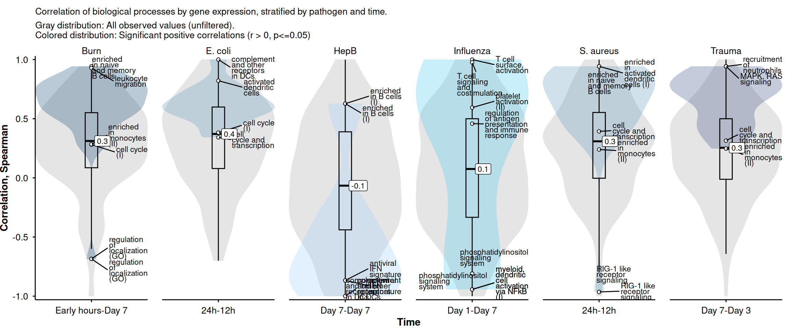
# Save plot
correlation_processes_bypathogen_time %>%
ggsave(filename = here("Figures", "all_human_mouse_gsea_btm_intramodule_correlation_violinplot_labeled.png"),
width = 12,
height = 5)Ignoring unknown labels:
• colour : ""# Prepare heatmap data
btm_correlation_process_heatmap_df =
correlation_processes_bypathogen_time_df %>%
mutate(
# Reorder processes by mean correlation
process = fct_reorder(process, cor_value, .fun = mean),
timepoint = as.factor(timepoint_comparison),
group = fct_relevel(group, immune_order)
) %>%
#Refactor
mutate(pathogen = fct_relevel(pathogen, "Influenza", "HepB", "S. aureus", "E. coli", "Burn", "Trauma"),
treatment = case_when(pathogen %in% c("HepB", "Influenza") ~ "Vaccination",
pathogen %in% c("S. aureus", "E. coli") ~ "Infection",
pathogen %in% c("Burn", "Trauma") ~ "Injury",
TRUE ~ pathogen),
treatment = fct_relevel(treatment, "Vaccination", "Infection", "Injury"))
# Build heatmap
btm_correlation_process_heatmap = btm_correlation_process_heatmap_df %>%
# Aesthetics
ggplot(aes(x = timepoint_comparison, y = process, fill = cor_value)) +
# Facets by functional group and pathogen
facet_grid(
rows = vars(group),
cols = vars(pathogen),
scales = "free",
space = "free"
) +
# Geoms
geom_tile(color = "white", linewidth = 0.2) +
geom_text(aes(label = p_label),
data = . %>% filter(p_label != "ns"),
size = 4, vjust = 0.75) +
# Scales
scale_fill_gradient2(
low = "#06d6a0",
mid = "white",
high = "#669bbc",
midpoint = 0,
name = "Correlation"
) +
# Labels
labs(
x = "",
y = "",
title = paste0("BTM immune – intramodule correlation")
) +
# Theme
theme_vaxgo() +
theme(axis.text.x = element_text(angle = 90, hjust = 1, vjust = 0.5),
axis.text.y = element_text(size = 8),
strip.text.y = element_text(angle = 0, hjust = 0, vjust = 0.5),
legend.position = "top",
legend.direction = "horizontal",
legend.text = element_text(size = 8),
ggh4x.facet.nestline = element_line(colour = "black", linetype = 1))
# Render heatmap
btm_correlation_process_heatmap 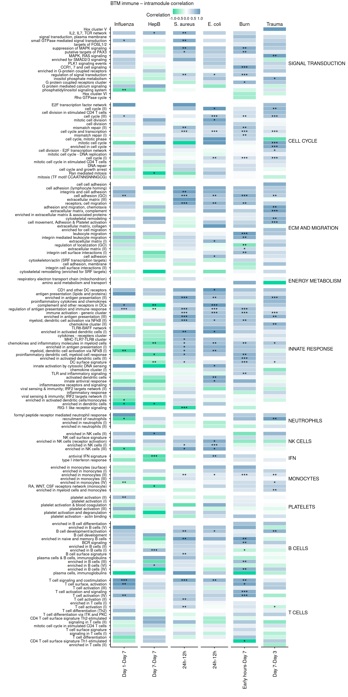
Compare the leading-edge genes (LEGs): classify each gene as shared, Human-only, or Mouse-only.
#Import
# Split core enrichment genes into separate rows
gsea_btm_results_core = gsea_btm_results_all_matched %>%
filter(p_adjust <= 0.25) %>%
separate_rows(core_enrichment, sep = "/")
# Join Human and Mouse core enrichment genes
gsea_btm_results_core_joined =
# Extract Human core genes
gsea_btm_results_core %>%
filter(organism == "Human") %>%
select(pathogen, process, timepoint_comparison,
gene = core_enrichment,
set_size_human = set_size,
p_adjust_human_gsea = p_adjust,
nes_human = nes) %>%
mutate(human_core = TRUE) %>%
# Full join with Mouse core genes
full_join(
gsea_btm_results_core %>%
filter(organism == "Mouse") %>%
select(pathogen, process, timepoint_comparison,
gene = core_enrichment,
set_size_mouse = set_size,
p_adjust_mouse_gsea = p_adjust,
nes_mouse = nes) %>%
mutate(mouse_core = TRUE),
by = c("pathogen", "process", "timepoint_comparison", "gene")
) %>%
# Classify each gene's conservation status
mutate(
status = case_when(
human_core == TRUE & mouse_core == TRUE ~ "Shared",
human_core == TRUE & is.na(mouse_core) ~ "Human only",
mouse_core == TRUE & is.na(human_core) ~ "Mouse only",
TRUE ~ "Not core"
)
) %>%
# Arrange and attach functional group
arrange(pathogen, timepoint_comparison, process, status) %>%
inner_join(btm_annotation_genes %>%
select(process, group),
by = "process") %>%
distinct()Warning in inner_join(., btm_annotation_genes %>% select(process, group), : Detected an unexpected many-to-many relationship between `x` and `y`.
ℹ Row 1 of `x` matches multiple rows in `y`.
ℹ Row 23 of `y` matches multiple rows in `x`.
ℹ If a many-to-many relationship is expected, set `relationship =
"many-to-many"` to silence this warning.# Inspect and save
gsea_btm_results_core_joined %>%
dplyr::count(pathogen, timepoint_comparison, status)# A tibble: 15 × 4
pathogen timepoint_comparison status n
<chr> <chr> <chr> <int>
1 Burn Early hours-Day 7 Human only 466
2 Burn Early hours-Day 7 Mouse only 370
3 Burn Early hours-Day 7 Shared 285
4 E. coli 24h-12h Human only 590
5 E. coli 24h-12h Mouse only 391
6 E. coli 24h-12h Shared 282
7 HepB Day 7-Day 7 Human only 410
8 HepB Day 7-Day 7 Mouse only 34
9 Influenza Day 1-Day 7 Human only 496
10 S. aureus 24h-12h Human only 482
11 S. aureus 24h-12h Mouse only 427
12 S. aureus 24h-12h Shared 306
13 Trauma Day 7-Day 3 Human only 1100
14 Trauma Day 7-Day 3 Mouse only 122
15 Trauma Day 7-Day 3 Shared 150#Save
gsea_btm_results_core_joined %>%
saveRDS(file = here("tables", "Functional analysis", "all_human_mouse_gsea_btm_results_core_joined.rds"))Compute the percentage of leading-edge genes shared between organisms, stratified by status, process, pathogen, and timepoint.
#Import
gsea_btm_results_core_joined =
readRDS(file = here("tables", "Functional analysis", "all_human_mouse_gsea_btm_results_core_joined.rds"))
#Filter genes analysed in both species
matching_genes = dge_btm_process_genes_wide %>%
select(pathogen, human_symbol = symbol) %>%
distinct()
# Compute percentage of LEGs per status and stratum
legs_perc <- gsea_btm_results_core_joined %>%
# filter(process == "immune activation - generic cluster") %>%
inner_join(matching_genes, by = join_by(pathogen, gene == human_symbol)) %>%
dplyr::distinct() %>%
# Count genes per status within each process stratum
dplyr::group_by(pathogen, timepoint_comparison, process, status) %>%
dplyr::summarise(n = dplyr::n(),
.groups = "drop_last",
group = dplyr::first(group)) %>%
# Calculate overall metrics and Mouse-specific denominator
dplyr::mutate(
#All in the denominator
percent = (n / sum(n)) * 100,
ntotal = sum(n),
percent = round(percent, 0),
#Mouse total LEGs in the denominator
n_mouse_total = sum(n[status %in% c("Mouse only", "Shared")]),
percent_mouse = dplyr::case_when(
status %in% c("Mouse only", "Shared") & n_mouse_total > 0 ~ (n / n_mouse_total) * 100,
TRUE ~ NA_real_
),
percent_mouse = round(percent_mouse, 0)
) %>%
dplyr::ungroup() %>%
# Refactor treatment categories and set explicit factor order
dplyr::mutate(
treatment = dplyr::case_when(
pathogen %in% c("HepB", "Influenza") ~ "Vaccination",
pathogen %in% c("S. aureus", "E. coli") ~ "Infection",
pathogen %in% c("Burn", "Trauma") ~ "Injury",
TRUE ~ pathogen
),
treatment = fct_relevel(treatment, "Vaccination", "Infection", "Injury")
) %>%
dplyr::arrange(timepoint_comparison)
# # Save summary table
legs_perc %>%
saveRDS(file = here("tables", "Functional analysis", "all_human_mouse_gsea_btm_results_core_summary.rds"))
# Report mean and median shared percentage per pathogen
legs_perc %>%
filter(status == "Shared") %>%
# group_by(pathogen) %>%
summarise(
median_perc = median(percent, na.rm = T),
mean_perc = mean(percent, na.rm = T),
n = n(),
se_perc = sd(percent, na.rm = T),
median_perc_mouse = median(percent_mouse, na.rm = T),
mean_perc_mouse = mean(percent_mouse, na.rm = T))# A tibble: 1 × 6
median_perc mean_perc n se_perc median_perc_mouse mean_perc_mouse
<dbl> <dbl> <int> <dbl> <dbl> <dbl>
1 48 51.3 135 22.7 71 70.4Visualise the distribution of shared leading-edge gene percentages across processes, pathogens, and timepoints with violin-boxplots, annotating extreme processes.
#Import
legs_perc = readRDS(file = here("tables", "Functional analysis", "all_human_mouse_gsea_btm_results_core_summary.rds"))
# Prepare plot data
shared_perc_plot_df = legs_perc %>%
# Keep only shared status
filter(status == "Shared") %>%
mutate(
# Classify treatment type
treatment = case_when(
pathogen %in% c("HepB", "Influenza") ~ "Vaccination",
pathogen %in% c("S. aureus", "E. coli") ~ "Infection",
pathogen %in% c("Burn", "Trauma") ~ "Injury",
TRUE ~ pathogen
),
treatment = fct_relevel(treatment, "Vaccination", "Infection", "Injury"),
group = fct_relevel(group, c(immune_order))
)Warning: There was 1 warning in `mutate()`.
ℹ In argument: `treatment = fct_relevel(treatment, "Vaccination", "Infection",
"Injury")`.
Caused by warning:
! 1 unknown level in `f`: Vaccination#Labels
top_bottom_shared_modules <- dplyr::bind_rows(
# Extract top 5 process modules per pathogen and timepoint
shared_perc_plot_df %>%
dplyr::group_by(pathogen, timepoint_comparison) %>%
dplyr::arrange(-percent_mouse, -ntotal) %>%
dplyr::slice_head(n = 2),
# Extract bottom 5 process modules per pathogen and timepoint
shared_perc_plot_df %>%
dplyr::group_by(pathogen, timepoint_comparison) %>%
dplyr::arrange(percent_mouse, -ntotal) %>%
dplyr::slice_head(n = 2)
) %>%
# Apply text wrapping and assign randomized direction (-1 = left, 1 = right)
dplyr::mutate(
process = stringr::str_wrap(process, width = 10),
side = sample(c(-1, 1), size = dplyr::n(), replace = TRUE),
nudge_x = side * 0.2,
hjust = dplyr::if_else(side == 1, 0, 1)
)
# Violin-boxplot of shared percentage
shared_processes_bypathogen_time = shared_perc_plot_df %>%
bind_rows(shared_perc_plot_df %>%
mutate(treatment = "Pooled",
pathogen = "",
timepoint_comparison = "") %>%
distinct()) %>%
# Aesthetics
ggplot() +
aes(x = timepoint_comparison,
y = percent_mouse,
fill = pathogen,
color = pathogen) +
# Facets
facet_nested_wrap(~treatment + pathogen,
scales = "free_x", nrow = 1) +
# Geoms
geom_violin(color = NA,
alpha = 0.5,
fill = "gray90") +
geom_boxplot(
color = "black",
width = 0.1,
fill = "white",
outliers = FALSE
) +
geom_point(
mapping = aes(fill = group,
group = group,
label = process),
color = "black",
pch = 21,
size = 2,
position = position_dodge2(width = 0.5)
) +
# Median annotation
stat_summary(
fun = median,
geom = "label",
aes(label = after_stat(round(y, 1))),
size = 3,
hjust = -0.2,
color = "black",
fill = "white"
) +
# Scales
scale_y_continuous(expand = c(0.05, 0.05)) +
scale_fill_manual(values = colors$immune_colors) +
guides(
fill = guide_legend(
byrow = TRUE,
nrow = 3,
override.aes = list(shape = 22, size = 3)
)
) +
# Theme
theme_vaxgo() +
theme(panel.spacing = unit(0.2, "lines"),
plot.margin = margin(0.3, 0.3, 0.3, 0.3, unit = "cm"),
plot.title = element_text(hjust = 0.5, face = "bold"), plot.title.position = "panel",
legend.position = "top",
legend.key.spacing.y = unit(1, "pt"),
legend.margin = margin(t = 0, b = 10),
legend.key.size = unit(2, "pt"),
axis.title.x = element_blank(),
ggh4x.facet.nestline = element_line(colour = "black", linetype = 1)) +
# Labels
labs(x = "Time",
y = "%Shared LEGs = Shared/Mouse (total)",
color = "",
fill = "BTM Group",
title = "Distribution of %Shared LEGs, modules with p_adj <= 0.25") Warning in geom_point(mapping = aes(fill = group, group = group, label =
process), : Ignoring unknown aesthetics: label# Render plot
shared_processes_bypathogen_time Ignoring unknown labels:
• colour : ""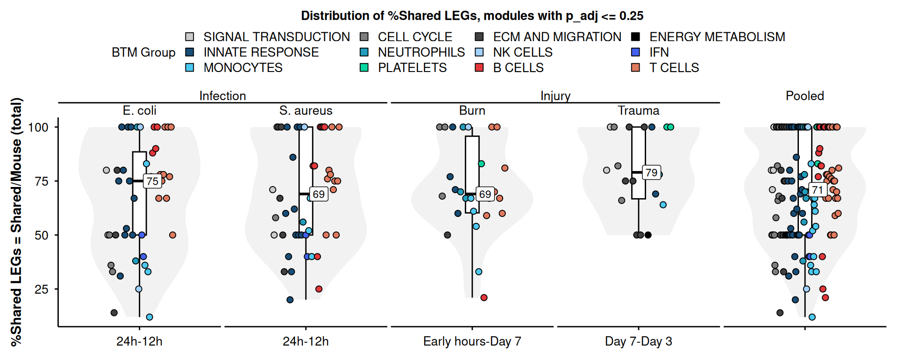
# Save plot
shared_processes_bypathogen_time %>%
ggsave(filename = here("Figures", "all_human_mouse_gsea_btm_intramodule_shared_violinplot_percentage_labeled_horizontal.png"),
width = 10,
height = 4)Ignoring unknown labels:
• colour : ""# Compare log2FC and ranks of Leading Edge genes across species
# 1. Define target process
correlation_processes_bypathogen_time_df = readRDS(file = here("tables", "Functional analysis", "all_human_mouse_dge_btm_process_genes_correlation.rds"))
dge_btm_process_genes_correlation = correlation_processes_bypathogen_time_df
# Unite all data sources into a master data frame by sequential joins
df_legs <- dge_btm_process_genes_wide %>%
# 2. Join with GSEA core enrichment (Leading Edge) genes
full_join(
gsea_btm_results_core_joined,
# filter(process == process_selected)
by = join_by(group, process, pathogen, timepoint_comparison, symbol == gene)
) %>%
drop_na(status) %>%
# Drop genes not measured in both organisms
drop_na(mean_l2fc_Mouse, mean_l2fc_Human) %>%
# 3. Integrate shared percentage metrics
inner_join(
legs_perc %>%
# filter(status == "Shared") %>%
rename(n_status_perc = percent_mouse),
by = join_by(pathogen, group, process, timepoint_comparison, status)
) %>%
# 4. Integrate Normalized Enrichment Scores (NES)
inner_join(
dge_btm_gsea_mean_wide %>%
ungroup() %>%
# filter(process == process_selected)
select(process, group, pathogen, timepoint_comparison, starts_with("nes_")),
by = join_by(pathogen, group, process, timepoint_comparison)
) %>%
# 5. Integrate correlation statistics
inner_join(
dge_btm_process_genes_correlation %>%
select(timepoint_comparison, pathogen, process, cor_value, r_squared, p_label, cor_label),
by = join_by(pathogen, process, timepoint_comparison)
) %>%
# 6. Data cleaning and dynamic label generation for faceting
mutate(
across(starts_with("nes_"), ~ round(.x, 2)),
status = if_else(is.na(status), "Not core", status),
facet_label = sprintf(
"%s\nShared = %s%%\nNES Mouse = %.2f\nNES Human = %.2f",
timepoint_comparison, n_status_perc, nes_Mouse, nes_Human
)
) %>%
arrange(timepoint_comparison) %>%
mutate(facet_label = fct_inorder(facet_label)) %>%
distinct() %>%
# Rank genes by log2FC within each condition group
group_by(pathogen, process, group, timepoint_comparison) %>%
mutate(Mouse_rank = rank(mean_l2fc_Mouse),
Mouse_rank_p = rank(mean_l2fc_Mouse * -log(p_adjust_mouse_gsea)),
Human_rank_p = rank(mean_l2fc_Human * -log(p_adjust_human_gsea)),
Human_rank = rank(mean_l2fc_Human)
) %>%
ungroup()Warning in inner_join(., dge_btm_process_genes_correlation %>% select(timepoint_comparison, : Detected an unexpected many-to-many relationship between `x` and `y`.
ℹ Row 1426 of `x` matches multiple rows in `y`.
ℹ Row 565 of `y` matches multiple rows in `x`.
ℹ If a many-to-many relationship is expected, set `relationship =
"many-to-many"` to silence this warning.#Fix facet label to match only Shared LEGs
df_legs = df_legs %>%
filter(status == "Shared") %>%
select(facet_label, pathogen, timepoint_comparison, process, group) %>%
distinct() %>%
inner_join(df_legs %>%
select(!facet_label),
by = join_by(pathogen, timepoint_comparison, process, group))
#Save
df_legs %>%
saveRDS(file = here("tables", "Functional analysis", "all_human_mouse_gsea_btm_legs.rds"))
# Check distinct pathogen-timepoint combinations
dge_btm_gsea_mean_wide %>%
ungroup() %>%
select(pathogen, timepoint_comparison) %>%
distinct() pathogen timepoint_comparison
1 S. aureus 24h-12h
2 E. coli 24h-12h
3 Influenza Day 1-Day 7
4 HepB Day 7-Day 7
5 Burn Early hours-Day 7
6 Trauma Day 7-Day 3# Reshape rank variables into long format
df_legs_ranked = df_legs %>%
select(symbol:timepoint_comparison, group,
status, n_status_perc:facet_label,
Mouse_rank:Human_rank) %>%
pivot_longer(
names_to = "variable",
values_to = "value",
cols = c("Mouse_rank", "Human_rank",
"Mouse_rank_p", "Human_rank_p"
)
) %>%
mutate(organism = if_else(str_detect(variable, "Mouse"), "M", "H")) %>%
# Refine labels and categorical grouping (Vaccination, Infection, Injury)
mutate(
# facet_label = sprintf(
# "%s\n%s\nShared = %s%%\nNES M=%.2f, H=%.2f",
# timepoint_comparison, cor_label, n_status_perc, nes_Mouse, nes_Human
# ),
treatment = case_when(
pathogen %in% c("HepB", "Influenza") ~ "Vaccination",
pathogen %in% c("S. aureus", "E. coli") ~ "Infection",
pathogen %in% c("Burn", "Trauma") ~ "Injury",
TRUE ~ pathogen
),
treatment = fct_relevel(treatment, "Vaccination", "Infection", "Injury")
) %>%
arrange(timepoint_comparison) %>%
mutate(facet_label = fct_inorder(facet_label))Warning: There was 1 warning in `mutate()`.
ℹ In argument: `treatment = fct_relevel(treatment, "Vaccination", "Infection",
"Injury")`.
Caused by warning:
! 1 unknown level in `f`: Vaccinationdf_legs_ranked# A tibble: 6,920 × 39
symbol group process timepoint_comparison status n_status_perc n_mouse_total
<chr> <chr> <chr> <chr> <chr> <dbl> <int>
1 FCER2 B CE… enrich… 24h-12h Shared 82 17
2 FCER2 B CE… enrich… 24h-12h Shared 82 17
3 FCER2 B CE… enrich… 24h-12h Shared 82 17
4 FCER2 B CE… enrich… 24h-12h Shared 82 17
5 BLK B CE… enrich… 24h-12h Shared 82 17
6 BLK B CE… enrich… 24h-12h Shared 82 17
7 BLK B CE… enrich… 24h-12h Shared 82 17
8 BLK B CE… enrich… 24h-12h Shared 82 17
9 HLA-DOB B CE… enrich… 24h-12h Shared 82 17
10 HLA-DOB B CE… enrich… 24h-12h Shared 82 17
# ℹ 6,910 more rows
# ℹ 32 more variables: ntotal <int>, percent <dbl>, n <int>, mouse_core <lgl>,
# nes_mouse <dbl>, p_adjust_mouse_gsea <dbl>, set_size_mouse <int>,
# human_core <lgl>, nes_human <dbl>, p_adjust_human_gsea <dbl>,
# set_size_human <int>, n_participants_Control <dbl>, se_Control <dbl>,
# t_Control <dbl>, adj_p_val_Control <dbl>, mean_l2fc_Control <dbl>,
# n_participants_Human <dbl>, n_participants_Mouse <dbl>, se_Human <dbl>, …# Gene expression
dge_btm_process_genes_diff_bygene = readRDS(here("tables", "Differential gene expression", "human_mouse_log2fc_avg_wide_degs_all_immune_nonimmune.rds"))
dge_btm_process_genes_diff_bygene_clean = dge_btm_process_genes_diff_bygene %>%
filter(gene_set == "All genes", comparison == "Human vs. Mouse") %>%
filter(pathogen_mouse != "DMD") %>%
select(treatment = treatment_human, pathogen = pathogen_human, timepoint_comparison, hgnc_symbol = human_symbol, mean_log2fc_human, mean_log2fc_mouse, mean_log2fc_diff, se_mouse, p_adj_mouse, p_adj_human) %>%
mutate(inverse_se_mouse = 1/se_mouse,
abs_log2fc_diff = abs(mean_log2fc_diff)) %>%
select(-se_mouse, -mean_log2fc_diff) %>%
group_by(treatment, pathogen, timepoint_comparison) %>%
mutate( rank_log2fc_mouse = percent_rank(mean_log2fc_mouse * -log10(pmax(p_adj_mouse, 1e-300))) * 100,
rank_log2fc_human = percent_rank(mean_log2fc_human * -log10(pmax(p_adj_human, 1e-300))) * 100,
abs_rank_log2fc_mouse = percent_rank(abs(mean_log2fc_mouse) * -log10(pmax(p_adj_mouse, 1e-300))) * 100,
abs_rank_log2fc_human = percent_rank(abs(mean_log2fc_human) * -log10(pmax(p_adj_human, 1e-300))) * 100) %>%
ungroup()
#LEGs
all_human_mouse_gsea_btm_results_core_joined = readRDS(file = here("tables", "Functional analysis", "all_human_mouse_gsea_btm_results_core_joined.rds"))
gsea_btm_legs_clean =
all_human_mouse_gsea_btm_results_core_joined %>%
distinct() %>%
select(pathogen, process, group, timepoint_comparison, hgnc_symbol = gene, p_adjust_mouse_gsea, nes_human, nes_mouse, status) %>%
distinct() %>%
mutate(status_original = status) %>%
mutate(status = if_else(status == "Shared", "Shared", "Not-shared"))
#Filter timepoints
selected_timepoints = gsea_btm_legs_clean %>%
select(pathogen, timepoint_comparison) %>%
distinct()
dge_btm_process_genes_diff_bygene_clean_filtered =
bind_rows(
#LEGs categorized
dge_btm_process_genes_diff_bygene_clean %>%
inner_join(selected_timepoints,
by = join_by(pathogen, timepoint_comparison)) %>%
inner_join(
gsea_btm_legs_clean %>%
select(hgnc_symbol, process, group, pathogen, p_adjust_mouse_gsea, nes_human, nes_mouse, status_original, status, timepoint_comparison) %>% distinct(),
by = join_by(hgnc_symbol, pathogen, timepoint_comparison)
) %>%
mutate(status = if_else(is.na(status), "Not LEG", status)),
#Bind all genes
dge_btm_process_genes_diff_bygene_clean %>%
inner_join(selected_timepoints,
by = join_by(pathogen, timepoint_comparison)) %>%
left_join(
gsea_btm_legs_clean %>%
select(hgnc_symbol, process, group, pathogen, p_adjust_mouse_gsea, nes_human, nes_mouse, status_original, status, timepoint_comparison) %>% distinct(),
by = join_by(hgnc_symbol, pathogen, timepoint_comparison)
) %>%
mutate(status = "All genes")
)
dge_btm_process_genes_diff_bygene_clean_filtered %>% dplyr::count(pathogen, timepoint_comparison, process, status, status_original)# A tibble: 1,386 × 6
pathogen timepoint_comparison process status status_original n
<chr> <chr> <chr> <chr> <chr> <int>
1 Burn Early hours-Day 7 B cell surface si… All g… Mouse only 14
2 Burn Early hours-Day 7 B cell surface si… Not-s… Mouse only 14
3 Burn Early hours-Day 7 CD1 and other DC … All g… Mouse only 3
4 Burn Early hours-Day 7 CD1 and other DC … Not-s… Mouse only 3
5 Burn Early hours-Day 7 CD4 T cell surfac… All g… Mouse only 5
6 Burn Early hours-Day 7 CD4 T cell surfac… Not-s… Mouse only 5
7 Burn Early hours-Day 7 DC surface signat… All g… Human only 9
8 Burn Early hours-Day 7 DC surface signat… Not-s… Human only 9
9 Burn Early hours-Day 7 DNA repair All g… Mouse only 5
10 Burn Early hours-Day 7 DNA repair Not-s… Mouse only 5
# ℹ 1,376 more rows#Save
dge_btm_process_genes_diff_bygene_clean_filtered %>%
saveRDS(file = here("tables", "Functional analysis", "dge_btm_process_genes_diff_bygene_clean_filtered.rds"))
dge_btm_process_genes_diff_bygene_clean_filtered# A tibble: 53,003 × 21
treatment pathogen timepoint_comparison hgnc_symbol mean_log2fc_human
<fct> <chr> <chr> <chr> <dbl>
1 Injury Burn Early hours-Day 7 ABCB4 -0.962
2 Injury Burn Early hours-Day 7 ABLIM1 -1.58
3 Injury Burn Early hours-Day 7 ACAP1 1.82
4 Injury Burn Early hours-Day 7 ACAP1 1.82
5 Injury Burn Early hours-Day 7 ACSL1 1.09
6 Injury Burn Early hours-Day 7 ACSL1 1.09
7 Injury Burn Early hours-Day 7 ACTL6A -0.845
8 Injury Burn Early hours-Day 7 ACTN1 0.425
9 Injury Burn Early hours-Day 7 ACTN1 0.425
10 Injury Burn Early hours-Day 7 ACTN4 0.669
# ℹ 52,993 more rows
# ℹ 16 more variables: mean_log2fc_mouse <dbl>, p_adj_mouse <dbl>,
# p_adj_human <dbl>, inverse_se_mouse <dbl>, abs_log2fc_diff <dbl>,
# rank_log2fc_mouse <dbl>, rank_log2fc_human <dbl>,
# abs_rank_log2fc_mouse <dbl>, abs_rank_log2fc_human <dbl>, process <chr>,
# group <chr>, p_adjust_mouse_gsea <dbl>, nes_human <dbl>, nes_mouse <dbl>,
# status_original <chr>, status <chr>By treatment and pathogen
# Gene expression
legs_error_divergence_plot = dge_btm_process_genes_diff_bygene_clean_filtered %>%
filter(treatment %in% c("Infection", "Injury")) %>%
bind_rows(dge_btm_process_genes_diff_bygene_clean_filtered %>%
filter(treatment %in% c("Infection", "Injury")) %>%
mutate(treatment = "Pooled",
pathogen = "")) %>%
ggplot() +
aes(x = inverse_se_mouse,
y = abs_log2fc_diff,
color = status,
fill = status,
) +
facet_nested_wrap(~treatment + pathogen, nrow = 1, scales = "free_x") +
# Regression
geom_smooth(
method = "lm",
data = . %>% filter(status == "All genes"),
mapping = aes(color = status, fill = status),
se = TRUE
) +
# #Marginal Boxplot
# # TOP
# geom_violin(
# mapping = aes(
# x = inverse_se_mouse,
# y = 3.5,
# ),
# outliers = FALSE,
# outlier.shape = NA,
# alpha = 0.5,
# width = 0.75,
# color = NA,
# show.legend = T
# ) +
# geom_boxplot(
# mapping = aes(
# x = inverse_se_mouse,
# y = 3.5,
# ),
# outliers = FALSE,
# outlier.shape = NA,
# alpha = 0, linewidth = 0.2,
# color = "black",
# width = 0.75,
# show.legend = FALSE
# ) +
# # RIGHT
# geom_violin(
# mapping = aes(
# x = 18,
# y = abs_log2fc_diff,
# ),
# outliers = FALSE,
# outlier.shape = NA,
# alpha = 0.5,
# width = 4,
# color = NA,
# show.legend = FALSE
# ) +
# geom_boxplot(
# mapping = aes(
# x = 18,
# y = abs_log2fc_diff,
# ),
# outliers = FALSE,
# outlier.shape = NA,
# alpha = 0,
# linewidth = 0.2,
# color = "black",
# width = 4,
# show.legend = FALSE
# ) +
#Add correlation stats
stat_cor(
data = . %>% filter(status == "All genes"),
method = "spearman",
cor.coef.name = "rho",
label.y = 2,
label.x = 1,
size = 4,
show.legend = F
) +
# scale_y_continuous(limits = c(0, 4)) +
# scale_x_continuous(limits = c(0, 20))+
scale_fill_manual(values = colors$comparison) +
scale_color_manual(values = colors$comparison) +
labs(
x = "1/SE (Mouse)",
y = "|ΔLog2FC|",
fill = "LEG status"
) +
theme_vaxgo() +
theme(
legend.position = "top",
# panel.spacing = grid::unit(0.7, "cm")
) +
guides(
color = "none",
fill = guide_legend(
title.position = "left",
byrow = TRUE,
nrow = 1,
override.aes = list(shape = 22, alpha = 1, size = 3, linetype = 0)
)
)
legs_error_divergence_plot`geom_smooth()` using formula = 'y ~ x'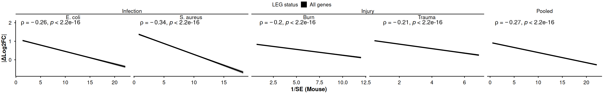
# # #Save
# legs_error_divergence_plot %>%
# ggsave(filename = here("Figures", "all_human_mouse_legs_error_divergence_plot_pooled.png"),
# height = 3, width = 16)##### Is divergence in Log2FC associated with groups of processes?
dge_btm_process_genes_diff_bygene_process = dge_btm_process_genes_diff_bygene_clean_filtered %>%
mutate(process = if_else(is.na(process), "Not BTM", process),
group = if_else(is.na(group), "Not BTM", group))
# 1. Prepare and filter data
plot_data <- dge_btm_process_genes_diff_bygene_process %>%
filter(
status %in% c("All genes"),
treatment %in% c("Infection", "Injury")
) %>%
mutate(group = fct_relevel(group, c("Not BTM", immune_order)) %>% fct_rev()) %>%
select(-process) %>%
distinct()
# 2. Perform Wilcoxon test against "Not BTM" with BH adjustment
stat_results <- plot_data %>%
rstatix::wilcox_test(
abs_log2fc_diff ~ group,
ref.group = "Not BTM",
p.adjust.method = "BH"
)
# 3. Generate Plot
dge_btm_process_genes_diff_bygene_process_pooled_plot <- ggplot(
plot_data,
aes(x = group, y = abs_log2fc_diff, color = group, fill = group)
) +
geom_violin(alpha = 1, width = 1, color = NA) +
geom_boxplot(width = 0.5, alpha = 0, color = "black", outliers = FALSE) +
# STATISTICAL TEST LAYER
stat_pvalue_manual(
stat_results,
x = "group2",
y.position = 3.5,
label = "p.adj",
remove.bracket = TRUE,
coord.flip = TRUE,
size = 4, hide.ns = F,
color = "black", hjust = 0
) +
coord_flip() +
scale_y_continuous(limits = c(0, 4.5), expand = c(0, 0)) +
scale_fill_manual(values = colors$immune_colors) +
scale_color_manual(values = colors$immune_colors) +
labs(
x = "",
y = "|ΔLog2FC|",
fill = "",
color = ""
) +
theme_vaxgo() +
theme(legend.position = "none")
#Display plot
dge_btm_process_genes_diff_bygene_process_pooled_plot +
#Add correlation stats
stat_cor(
data = . %>% filter(status == "All genes"),
method = "spearman",
cor.coef.name = "rho",
mapping = aes(label = paste0("atop(", after_stat(r.label), ",", after_stat(p.label), ")")),
parse = TRUE,
label.y = 0.4,
label.x = 1,
size = 4,
show.legend = F
) Warning: Duplicated aesthetics after name standardisation: parseWarning: Removed 55 rows containing non-finite outside the scale range
(`stat_ydensity()`).Warning: Removed 55 rows containing non-finite outside the scale range
(`stat_boxplot()`).Warning: Removed 55 rows containing non-finite outside the scale range
(`stat_cor()`).Warning: No shared levels found between `names(values)` of the manual scale and the
data's colour values.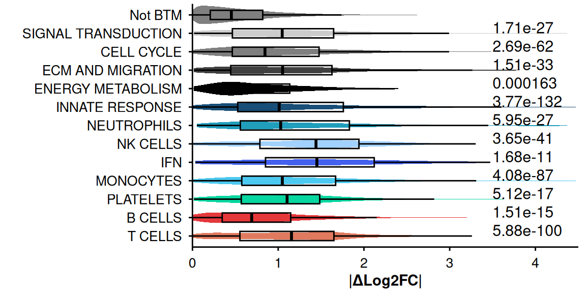
#Save
dge_btm_process_genes_diff_bygene_process_pooled_plot %>%
ggsave(filename = here("Figures", "all_human_mouse_dge_btm_process_genes_diff_bygene_process_pooled.png"),
height = 4, width = 6)Ignoring unknown labels:
• colour : ""Warning: Removed 55 rows containing non-finite outside the scale range
(`stat_ydensity()`).Warning: Removed 55 rows containing non-finite outside the scale range
(`stat_boxplot()`).Warning: No shared levels found between `names(values)` of the manual scale and the
data's colour values.